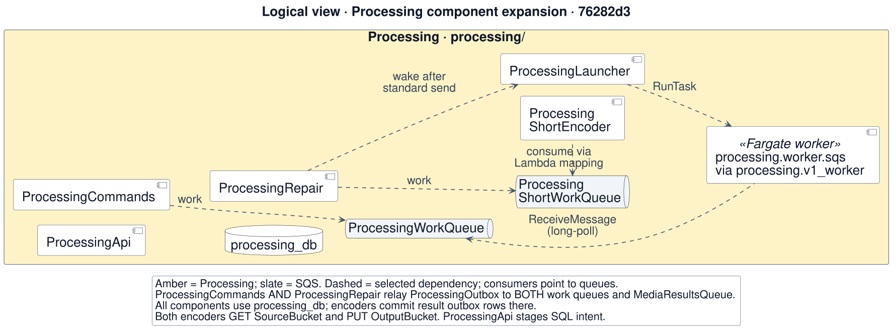
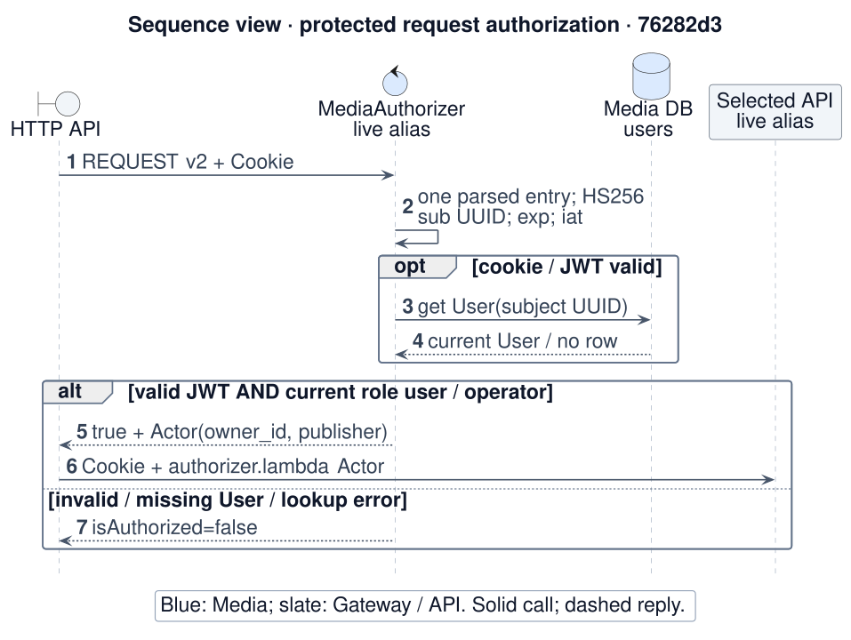
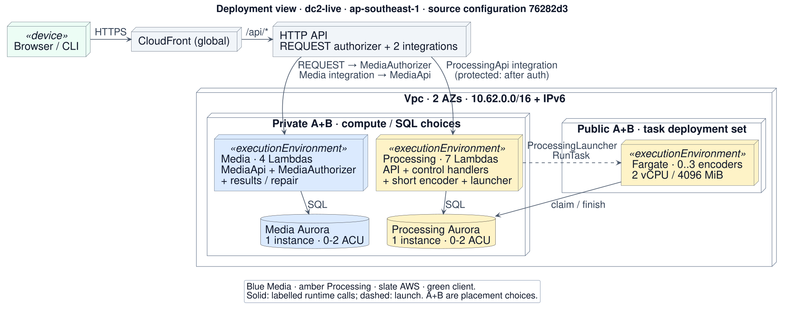
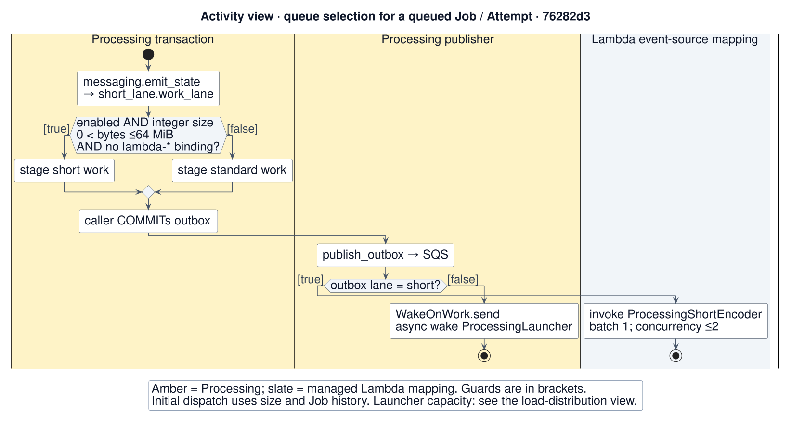
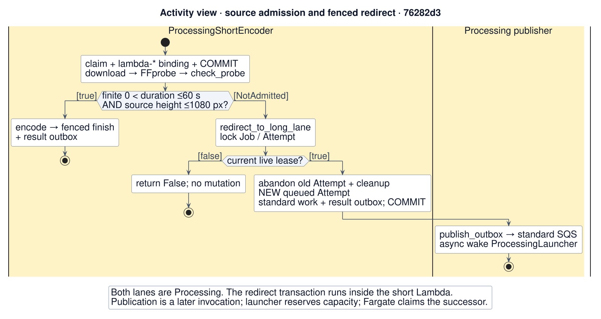
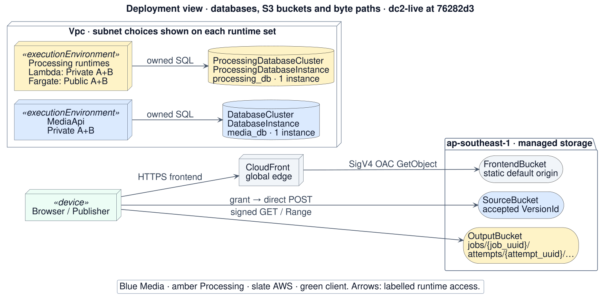

FlickPond: from video app to reusable media platform NUS Graduate Certificate, Architecting Scalable Systems
Team 17 · Guruprasath · Ibrahim · Long · 26 Oct 2026
Teams keep rebuilding upload-to-playback; we made it reusable Course coordinator
batch of recordings
Trainer
one video, kept private
Integrator
builds on the API
Operator
capacity and releases
upload once process later play privately
1. Overview
Two clients reuse the APIs of two owned services
Public HTTPS API2 OpenAPI documents
Operators: capacity, releases
Clients never touch databases or service internals.
1. Overview
Slide 3 · s3 s3 · 40 s · Long · 1b Producers are owners uploading through the browser or Publisher. The same owners consume the result; there is no viewer-sharing product Integrators build on the OpenAPI; operators handle capacity and releases Platform claim: Publisher has 0 service imports and 0 DB credentials (495 Python lines in 5 files). Source: final-report 40-quality, Extensibility Dashed arrow = asynchronous seam between Media and Processing If asked: s52 (why call it a platform) Source: [Code] Publisher: 0 imports · 0 DB credentials · enforced by a test Point to the public-client boundary. At 76282d3 Publisher contains five Python files, 495 lines including comments/blank lines. The public API is described by two OpenAPI documents, not one. Media OpenAPI ; Processing OpenAPI ; HTTPS public client ; enforced import boundary .
We kept the engine; we changed ownership and runtime
Inherited (Project 1)
Browser
One FastAPI appPostgres · Redis · MinIO
Worker replicasFFmpeg
As built
Clients
Gateway + authorizer
2 Aurora
S3
Lambda + Fargate
Inherited: FFmpeg HLS worker replicas basic CI
1. Overview
Clients reuse the contract; encoders run within caps 1. Overview
Slide 5 · s5 s5 · 25 s · Long · Opening claims Point to the four tiles. Publisher reuses the public contract; SQL outboxes and live execution leases protect state; configured encoder ceilings are 3 Fargate + 2 Lambda; the measured misses remain visible on s25 and s57. These are implementation and dated-receipt claims, not assessor acceptance or an idle-bill claim.
public client ; inbox/outbox ; live lease ; encoder ceilings ; dated workload .
Seven use cases in scope; sharing and tenants out
Upload · process · play
UC-1 upload UC-2 process UC-3 play
Retry · batch
UC-4 retry UC-5 bulk publish
Scale · release
UC-6 scale Processing UC-7 release
Out of scope: public sharing · tenants · live streaming · regional failover
1. Overview
Proposal to live platform in seventeen days 4 Oct Proposal 9 Oct DDD pack 12–13 Oct Extraction 17–18 Oct AWS proof 20 Oct Freeze 21–22 Oct Lane + DB split 26 Oct Present finished 2 days late
2. Project conduct
Slide 7 · s7 s7 · 40 s · Ibrahim · 2b Baseline and design finished 2 days late (9 Oct) because the full design pack came before code. Extraction and AWS work still landed inside planned windows. Source: final-report 20-conduct, Milestones Tag project2-v1 is 18 Oct. CD has been green on Main since run 39733859422 (22 Oct) Short-encode Lambda lane and per-service Aurora split went live 21–22 Oct Source: [Code] final-report 20-conduct milestones · CD 39733859422 recorded milestones .
Three specialist leads share an agreed effort allocation 11 pd
Cloud and delivery
Guruprasath
11 pd
Backend services
Ibrahim
11 pd
Domain and verification
Long
33 pd recorded to 20 Oct vs 31 planned · forecast 36 pd (12 each)
2. Project conduct
Slide 8 · s8 s8 · 25 s · Ibrahim · 2b Team-agreed allocations, not timesheets. 1 pd = 8 h. Recorded to 20 Oct: 11 pd each (33 total) vs 31 planned; forecast at submission 36 pd, 12 each (+16%). Source: project-documentation/effort-ledger.md; final-report 20-conduct, Effort Outline showed 12 pd per column; the ledger records 11 to date and 12 as forecast, so the slide shows 11 If asked: s50 Source: [Ledger] effort-ledger.md · recorded 20 Oct · team-agreed split Seven use cases are implemented; five issue classes remain
Latency (AISS-01) Edge hardening (AISS-02) Schema rollback (AISS-03) Ops hardening (AISS-04) Missing evidence (AISS-05)
Six demonstration recordings remain pending in this checkout.
2. Project conduct
Slide 9 · s9 s9 · 30 s · Ibrahim · Project status Point to functional scope, then the five classes. The pinned report records UC-1 to UC-7 implemented; this is not a claim that every experiment, recording or report deliverable is complete. D1–D6 video files are absent from this checkout. AISS-03 is accepted with an additive-schema compatibility policy; other classes remain open. The detailed table is s49; missing measurements are s51.
recorded scope ; issue register ; 15 alarms, no notification action .
Three drivers shaped every logical decision 1
Release and scale Processing alone
2
Survive duplicates and failures
3. Logical architecture
Each view answers a different design question
ARCHSS · Views of FlickPond · Kruchten 4+1 / C4 / Rozanski–Woods / arc42
View / model Question it answers Notation used Course / view framework Stable slide IDs
Context & scenarios Who uses it, and why? Scope / use cases ARCHSS · 4+1 scenarios s6 · s20 Logical / component Who owns each responsibility? UML components / interfaces ARCHSS · 4+1 logical s12 · s12-processing Process / runtime Who sends what, and when? UML numbered sequence ARCHSS · 4+1 process s13 · s14 Deployment Where does each part execute? UML deployment ARCHSS · 4+1 physical s22 · w1-triggers DDD strategic Why these context boundaries? Bounded-context map PE · domain analysis s11 · s16 DDD tactical Which entities share invariants? Aggregate / entity / VO model PE · domain / platform design s17 · w2-job Data / projection What persists, and how is it fenced? ER + typed schemas / sequence PE · platform data w4-media-main w4-processing-main · s19 Detailed design Which classes and calls implement it? UML class / module + sequence SAD · object design / UML w3-a-classes · s30 · s31 Development structure Which source modules depend on which? UML module / component ARCHSS · 4+1 development s28 w3-processing-components Delivery pipeline How are changes checked and promoted? UML activity / swimlanes DevSecOps · delivery process s34 · s68
Framework names describe correspondences; UML, ER and DDD name the model conventions. Security crosses views:
s15 .
R–W = Rozanski & Woods. C4 is a comparison of scope; the scope/use-case slide is not a formal C4 context diagram.
3. Logical architecture
Slide 11 · s10-views s10-views · W6 integration fragment Point across a single row: question, model, course, then the slide that answers it. The table connects distinct models without claiming that any one figure is a complete architecture description. Framework references from R5 V1/V3–V7: Kruchten, 4+1 ; Simon Brown, C4 ; arc42 deployment view and runtime view ; OMG UML 2.5.1 defines the notation; Rozanski & Woods, viewpoints and perspectives . Security crosses views rather than being one isolated picture. Course anchors from R5 C2–C5: ARCHSS , PE , SAD programme anchor , SDP . The SAD course URL in R5 now redirects to the course finder; the programme page confirms the course, and the assessor feedback supplies the class/object sequence expectation. The mapping is our choice of explanatory models. The public course pages do not mandate C4, Kruchten or a particular DDD canvas. Detailed DDD and class/sequence expectations come from the 26 October feedback. Integration: preserve the linked section IDs when renumbering visible labels. Each map link resolves its target ID to the live section index, then writes the numeric hash consumed by the deck’s private navigation closure. The review harness also accepts numeric hashes; the linked ID remains the integration contract. The map now targets the existing W1–W5 fragments by ID: s28 / w3-processing-components show selected static module dependencies, while s34 / s68 show delivery activities. Kruchten’s development view concerns static source organization, rather than the CI/CD activity. The table states correspondences, not full compliance with every framework. Deployment, DDD, detailed design, data and pipeline models remain owned by W1–W5.
Two services expose APIs and own their data
ARCHSS · Logical view (4+1 logical) · UML components
3. Logical architecture
Slide 12 · s12 s12 · W6 integration fragment
Processing separates commands from encoding
ARCHSS · Logical view continuation · UML components

Commands · Media → Processing ProcessingCommandsQueue submit / retry / cancel Work · within Processing ProcessingWorkQueue + ProcessingShortWorkQueue work Results · Processing → Media MediaResultsQueue result
3. Logical architecture
Slide 13 · s12-processing s12-processing · W6 integration fragment
Media commits intent; the scheduled repair sends it
ARCHSS · Process view (4+1 process) · Numbered UML sequence
3. Logical architecture
Slide 14 · s13 s13 · W6 integration fragment Follow messages 1–8. Point at the gap between SQL acceptance and the scheduled sender. Edit copies the completed parent’s primary output into a new pinned source, creates a new Asset and stages submit. It is not an edit envelope or a direct SQS send: media/services/v1_lifecycle.py:105 and media/services/v1_lifecycle.py:145 . Upload finalize also commits Asset, finalized reservation and submit intent: media/services/direct_intake.py:167 . Detailed object collaboration belongs to W3. MediaRepairRule is EventBridge rate(1 minute): scripts/aws/v1/definitions.py:1739 . The shared repair schedule is configured at definitions.py:1765 . Its handler calls media.messaging.publish_commands(), which delegates to delivery.sql.publish_due(): media/handlers.py:70 ; media/messaging.py:27 ; delivery/sql.py:58 . “MediaRepair.publish_commands” identifies the runtime/function association, not a Python class method. A relay reserves a row and commits, sends outside SQL locks, then fences its publication acknowledgment by claim_token. Lost replies can cause duplicates: delivery/sql.py:77 . MediaApi has no SQS SendMessage permission: scripts/aws/v1/definitions.py:742 . ProcessingCommandsMapping invokes command_handler, and handle_command wraps inbox dedupe, guard/domain mutation and staged outgoing work/results in one transaction: scripts/aws/v1/definitions.py:1267 ; processing/messaging.py:232 ; processing/messaging.py:304 . The SendMessage arrows are synchronous calls: publish_due awaits a response before fencing the publication acknowledgment; replies are omitted. Step 7 is the successful new-submit branch; duplicates can be no-ops and invalid messages roll back. The handler attempts publish_outbox after consumption. The batch result depends on the committed message transaction, not successful publication: processing/handlers.py:52 . ProcessingRepair retries deferred work. Quiet activity markers can skip scheduled DB work, so rate(1 minute) is not an end-to-end SLA: media/handlers.py:38 . Accepted HTTP status varies by operation, e.g. delete returns 204; the figure deliberately does not label every command 202.
Three message flows use four physical queues
ARCHSS · Process view continuation · Numbered UML sequence
3. Logical architecture
Slide 15 · s14 s14 · W6 integration fragment Continue with messages 9–16. Alternatives 11a and 11b–11c distinguish the short mapping invocation from the standard worker’s ReceiveMessage request/reply. Claim and finish are separate SQL transactions, each staging result state. Point out that the work flow stays entirely inside Processing. Two physical queues carry the SAME work kind. There are four source queues, each with its own DLQ, when the short lane is enabled: delivery/sqs.py:12 ; contracts/v1.py:28 ; scripts/aws/v1/definitions.py:596 ; scripts/aws/v1/definitions.py:632 . The “Processing separates commands from encoding” continuation (s12-processing) includes the three-flow / four-queue / five-kind table. Processing relay denotes a selected runtime, not an invented class: ProcessingCommands performs the immediate post-commit pass, ProcessingRepair runs the minute fallback (definitions.py:1765 ) and later results, and ProcessingEcsEvents / ProcessingS3Events also run run_once: processing/handlers.py:52 and processing/recovery_v1.py:189 . A successful command already emits a queued result; claim, finish and cancellation can emit more result snapshots. The sequence depicts encoding completion, not the only result. After standard work send, WakeOnWork invokes ProcessingLauncher, which reserves capacity and uses ECS RunTask before a finite worker long-polls. The short queue invokes ProcessingShortEncoder through a mapping: processing/launcher_trigger.py:39 ; scripts/aws/v1/definitions.py:1267 ; processing/launcher.py:337 . W1 owns the full launch/deployment view. Encoder authority is the live SQL lease, not message visibility. Separate claim and finish transactions are processing/lifecycle.py:136 and processing/lifecycle.py:205 . The claim/finish hooks stage result rows in ProcessingOutbox: processing/messaging.py:356 and processing/messaging.py:405 . Encoders cannot send SQS: scripts/aws/v1/definitions.py:800 . A later repair or hint pass publishes results. MediaResultsMapping invokes result_handler; consume_result commits MediaInbox and apply_result projection in one transaction before acknowledgment: scripts/aws/v1/definitions.py:1267 ; media/handlers.py:19 ; media/messaging.py:16 . No distributed SQL transaction or exactly-once SQS delivery is claimed.
Media rechecks the cookie; Processing trusts the Actor
ARCHSS · Security perspective across logical / runtime views · AD-09
3. Logical architecture
Slide 16 · s15 s15 · W6 integration fragment Point to GatewayAuthorizer on HttpApi, then MediaAuthorizer and its current users lookup. It is a Lambda REQUEST authorizer with payload v2 simple responses, Cookie identity source and TTL 0: scripts/aws/v1/definitions.py:1529 . This is not a managed JWT authorizer. session_token requires exactly one access_token cookie; read_token verifies HS256 and requires sub, exp and iat. authorize reads the current Media User and maps current user/operator roles to publisher, failing closed: media/authorizer.py:23 ; media/authorizer.py:40 ; media/services/security.py:48 . Actor context includes schema_version=1, integration=dc2-gateway-v1, owner_id and role: contracts/v1.py:69 . GatewayAdapter validates requestContext.authorizer.lambda, strips client x-owner-id/x-role, preserves cookie values and injects request.state.actor plus gateway_v1: contracts/gateway.py:33 and contracts/gateway.py:58 . Each API component compartment now shows its own GatewayAdapter instance, executed inside that API Lambda: media/lambda_handler.py:14 and processing/lambda_handler.py:13 . The outer boundary is invocation trust: contracts/gateway.py:3 requires Lambda resource policies restricting invocation to the configured Gateway. AuthorizerPermission and API invoke permissions scope apigateway.amazonaws.com to this HttpApi and account. Actor’s integration marker is a schema fence, not an authentication secret. The separately IAM-gated readiness path is contracts/gateway.py:170 . Media current_user revalidates the JWT cookie and current user row, then compares against the Actor. Operator checks remain current DB-role checks. Processing gateway_actor only accepts an adapter-injected Actor: media/api/deps.py:16 ; media/api/deps.py:45 ; processing/auth.py:6 . Protected Processing routes still synchronously depend on the Media authorizer lookup. Health and register/login/logout are public exceptions: scripts/aws/v1/definitions.py:1602 . Keep this compact trust view. W1 supplies the full numbered request sequence and network placement. The inner boundary groups Media identity authority; the outer boundary identifies backend invocation trust. Neither denotes public/private subnets.
Ownership and execution rules define two contexts
PE · Strategic DDD
Capability Rules that stay together Language / consistency boundary
Own, upload, edit Owner access; verify and pin source; Media · User, reservation, Asset, source pinPublish and play Validate result into local view; Media · public status, projection, playbackExecute and recover One Job per Asset; current Attempt; Processing · Job, Attempt, claim, deadline
Why we keep the other boundaries inside these contexts
Separate Identity: current User checks and Asset ownership remain in Media.
Separate Delivery: playback uses owned Asset + validated projection.
Separate Upload: adoption must commit the source pin, Asset and submit intent together.
One service: merges ownership rules with Attempt/lease rules and encoding execution.
3. Logical architecture
Slide 17 · s11 Point at the last column: the term job means a public Asset view in Media, but an execution Job with Attempts in Processing. Follow the adoption transaction on the first row and the Job/Attempt lock on the third. These are our source-backed design reasons, not proof of historical team deliberation. Identity, upload, and delivery are possible future contexts; this implementation provides no separate model/release boundary for them. A process or database split alone does not prove a bounded context. Modelling basis: Fowler, Bounded Context .
Code evidence: Media Asset . adoption transaction . edit adoption . playback mapping . Processing roots . current-attempt fence .
Commands cross contexts; work stays in Processing
PE · Strategic DDD
3. Logical architecture
Slide 18 · s16 Trace commands to Processing and result snapshots back to Media. U/D is scoped to the inferred result-model dependency: Media translates Processing state into its own projection and public accepted state. Command direction alone does not establish upstream/downstream. Customer/Supplier requires downstream priorities to enter upstream planning; code does not establish that agreement, so C/S is UNKNOWN and not drawn. Shared Kernel governance is likewise UNKNOWN; shared contract code alone does not establish that pattern. Conformist is not asserted because Media keeps and protects its own model. PL here is the Envelope/Source wire language; Actor is separate API context. Outbound enqueue_submit/command are adapters; incoming apply_result/public_job_schema provide the Media ACL behavior. Processing handle_command translates to its own records. Point to the work arrow entirely within Processing. delivery/ contains technical adapters. No cross-context ORM or FK. Queue shape validation is distinct from sender authority. Notation basis: Evans, DDD Reference .
Code evidence: published language . Media command adapter . Media ACL . public status translation . Processing translation . internal work . lane authority . shared contract/delivery code in Media image . shared code in Processing image .
Asset groups ownership with its adopted source value
PE · Tactical DDD / as built at 76282d3
3. Logical architecture
Slide 19 · s17 Point to the Asset entity root, the 0..1 derived SourceVersion value record and the six-field Source value. SourceVersion is a persistence row keyed only by its owner Asset, with no independent source identity or lifecycle, so we interpret its pin as a value rather than a second domain entity. source_for_asset returns a dict; Envelope.from_dict constructs contracts.v1.Source from that dict. Direct upload pins live on UploadReservation, so absence of SourceVersion does not mean absence of a source pin. Follow source_asset_id to a parent Asset by identity only; source_asset_id is not an FK. owner_id references the independent User through a local FK; processing_job_id is a plain UUID with no cross-context FK. The composition diamond denotes an owned value in our interpretation, not an ORM collection or cascade deletion. Finalize updates independent reservation and Asset records together: this is a deliberate exception to strict one-aggregate-per-transaction design, not proof of a fully enforced aggregate boundary. Source attributes are not made immutable against arbitrary SQL writes by the model. The implementation is anaemic: Asset and SourceVersion are SQLAlchemy records, while direct_intake, v1_lifecycle, repository and projection functions enforce policies with direct sessions. The one-Job-per-Asset constraint belongs to Processing, not Media. Aggregation basis: Vernon, Effective Aggregate Design II .
Code evidence: Asset fields/constraints . derived SourceVersion . Source value . source resolution . edit transaction . owned reads .
Job groups Attempt history with current lease rules
PE · Tactical DDD / as built at 76282d3
3. Logical architecture
Slide 20 · w2-job Point at 1..* Attempts and the exactly-one-current reference. Those are accepted V1 business invariants, while SQL provides an Attempt FK and unique job/attempt number; arbitrary SQL is not fenced as a full domain state machine. lock_pair locks Job FOR UPDATE and then reads Attempt with session.get; it does not issue a separate explicit Attempt FOR UPDATE. lock_pair checks the nondeleted Job/current Attempt and their membership; live then checks processing states, matching token, unexpired lease and deadline using database time. live alone does not check current membership. Retry from failed makes a new numbered Attempt; expiration abandons/ fails and does not auto-retry. The Output Pydantic DTO remains mutable, and its field data is serialized into Job.outputs JSON; there is no Output entity table; successful finish requires exactly one primary, distinct kinds, positive size, a present digest and attempt-scoped keys. With the two allowed kinds, accepted V1 state has at most two outputs; this is a service invariant, not a JSONB length constraint. The ORM Job is the root interpretation; ProcessingJob is a response DTO. This is an anaemic model: messaging/lifecycle/recovery functions mutate records directly. Cancellation updates the independent SubmissionGuard and Job in one local transaction; this limits a strict aggregate interpretation. Technical inbox/outbox rows are not extra domain aggregates merely because they share a transaction. Diagram shows selected actual attributes; legacy source_url columns remain but V1 constructs them empty.
Code evidence: Job and Attempt fields . Output DTO . current/lease fence . claim . finish outputs . retry . V1 source URL empty . expiry interruption .
Five message kinds express commands, work and state
PE · Tactical DDD / as built at 76282d3
Kind Producer → consumer State change / intent Payload fields (inside Envelope)
submitMedia → Processing control Adopt new Asset + source pin operations: listretryMedia → Processing control Failed projection permits intent; {}cancelMedia → Processing control Asset tombstone + cleanup intent {}workProcessing → own encoderinternal work Current nondeleted Job + Attempt operations: listresultProcessing state → Media ACL Submit, claim, finish/fail, retry, status, outputs, error,
Every envelope: schema_version, message_id/kind, owner/asset/job/attempt IDs, state_version, source, payload.Cancel before submit: result has null job/attempt/source and {status, cancellation_confirmed, command_message_id}.Model: commands + full result snapshots; no named JobStarted event stream or event sourcing.
3. Logical architecture
Slide 21 · w2-messages Point along each row from state change to staged outbox, then consumer. submit is emitted by enqueue_submit on finalize and stage_submit on edit adoption. Media retry does not itself create an Attempt; it validates the failed projection and stages an intent, normally without an immediate business-state update to Asset. cancel accompanies tombstone. Processing emit_state increments the version, stages result and stages work only for queued, nondeleted current work. Heartbeat updates lease times without emitting a result. Repairs can republish an existing work/outbox row without a new aggregate state change. Wire producer identities in contracts.PRODUCERS are media for commands, processing-dispatch for work, processing-completion for result; the last label covers all state snapshots, not just completion. Actual producer payloads come from the service functions: contracts.Envelope declares payload only as dict and does not provide five typed payload classes. Retry consumer additionally accepts optional request_id, but Media currently emits an empty payload and uses message_id. Processing public API retry/cancel are additional direct API paths, not Media queue kinds. Cancel-before-submit is a durable guard acknowledgement, not a fictitious Job event. The full typed envelope/source/output shape is in backup w2-wire.
Code evidence: five kinds/producers . Envelope and cancel exception . Media submit payload . retry/cancel builders . retry/tombstone . work/result payloads . emit_state . no-job cancellation . retry payload fallback . heartbeat .
An identical replay is ignored; conflicting v3 is rejected
ARCHSS · Information / process views · UML sequence · AD-21
3. Logical architecture
Slide 22 · s19 s19 · W6 integration fragment Point to the first gate: message identity. Same message_id and same canonical body hash returns False without projection mutation. Same ID with a different body raises MessageConflict: delivery/sql.py:18 . This is application SQL inbox dedupe, not SQS FIFO dedupe. For a NEW message_id, apply_result checks owner, asset, job and immutable source before version transition checks: media/projections.py:69 . For a schema-valid normal result for a live Asset that passes owner/job/source and output checks, given stored v3, v2 is ignored; a new message ID with identical semantic v3 is also ignored; DIFFERENT content at v3 is rejected. The semantic hash excludes message_id: media/projections.py:36 . The figure calls apply_result first; its identity/source validation precedes validate_transition. Higher versions still require consistent attempt identity/order and permitted terminal/regression behavior. The figure does not imply every v4 is accepted: media/projections.py:53 . Deleted assets dominate late non-cancel results: media/projections.py:83 . MediaInbox plus projection mutation commit together; on exception the inbox insert rolls back and the batch adapter returns an item failure: media/messaging.py:16 ; delivery/sqs.py:112 . Full versioned result snapshots form an eventually consistent local read model, not an event-sourced log.
The API accepts intent; S3 carries the video bytes
SAD · Request sequence / platform contract
1 ReservePOST /api/media/
2 Upload bytesBrowser / Publisher → S3 POST
3 FinalizePOST .../reservations/{id}/finalize
API path
CloudFront → HTTP API: authorize, then invoke MediaApi
After commit
EventBridge minute tick → MediaRepair → command SQS → ProcessingCommands
Status, edit, retry, delete and playback are additional API operations.
3. Logical architecture
Slide 23 · s20 Point to the green middle step: its URL is an S3 grant, never an API Gateway route. Reserve alone and source-object creation do not submit an encode. Finalize verifies the pinned source, then commits the finalized reservation, Asset and submit outbox. MediaApi has no SQS SendMessage permission. The next scheduled MediaRepair publishes commands; activity gates can delay a minute tick, so this is not a latency guarantee. Both API steps require the Gateway authorizer. Media {job_id} is an Asset ID. Playback uses owner-checked grants; .ts is requested from Media first, which returns 307, then the client requests S3. Sources: reserve/finalize routes ; adoption transaction ; S3 POST grant ; 100 MiB bound ; scheduled publisher ; API role ; HLS redirect ; quiet gate .
Two route owners expose distinct job identities
ARCHSS · Interface view / public API surface
Method + public path (braces name route parameters) Owner Authorizer
GET /api/media/health · GET /api/processing/health Each service No POST /api/media/auth/register · /login · /logout (same prefix) Media No GET /api/media/auth/me Media Yes POST /api/media/uploads/reservations Media Yes POST /api/media/uploads/reservations/{reservation_id}/finalize Media Yes GET /api/media/jobs · GET /api/media/jobs/{job_id} Media Yes POST /api/media/jobs/{job_id}/edit · POST .../{job_id}/retry Media Yes DELETE /api/media/jobs/{job_id} (Asset tombstone + cancel command) Media Yes GET /api/media/jobs/{job_id}/hls/{path} Media Yes GET /api/media/admin/jobs · DELETE /api/media/admin/jobs/{job_id} Media Yes + operator GET /api/processing/jobs?asset_ids=… · GET /api/processing/jobs/{job_id} Processing Yes POST /api/processing/jobs/{job_id}/retry · DELETE .../{job_id} (cancel) Processing Yes + publisher
Media {job_id} = Asset ID; Processing {job_id} = Processing Job ID.
3. Logical architecture
Slide 24 · w1-api-surface Point across the owner and authorization columns. This table groups business operations, not CloudFormation route counts. Media build_app leaves FastAPI docs/OpenAPI defaults enabled: /api/media/docs, /redoc, /openapi.json and /docs/oauth2-redirect (same prefix); these are protected by the ANY proxy. Processing explicitly disables docs_url, redoc_url and openapi_url. Expand abbreviated paths with their displayed prefix. Gateway CUSTOM protects the wildcard routes; exact health/register/login/logout exceptions use NONE. Admin rights are checked against Media's current users.role, not an operator Actor claim. Processing batch is filtered by asset_ids; read/retry/cancel use Processing Job IDs. Media deletion tombstones the Asset; direct Processing DELETE cancels Processing only. Direct Processing retry/cancel stage Processing outbox without a Media command queue leg. No Media /cancel, business PUT or PATCH is mounted. Sources: 9 Gateway routes ; mounted routers ; auth routes ; upload routes ; Media jobs/admin ; HLS ; Processing operations ; exact-root 404 ; Media framework defaults ; Processing disables docs ; FastAPI defaults .
Gateway attaches MediaAuthorizer to protected routes
SAD · Authorization sequence / Gateway trust boundary

Public routes bypass this hook; missing Cookie is rejected at Gateway.
3. Logical architecture
Slide 25 · w1-authorizer Start at HTTP API and trace its call/return to MediaAuthorizer, then its separate call to the selected API. The normal Browser → CloudFront → HTTP API path is on s20. This is a custom Lambda REQUEST authorizer, not Gateway's managed JWT authorizer. HS256 requires sub, exp and iat; sub must be a UUID. session_token requires exactly one cookie-list entry parsed with access_token. SimpleCookie collapses repeated names within one entry; this is not strict raw duplicate-name rejection. A missing Cookie identity source is rejected by Gateway before Lambda invocation. With a valid JWT, the authorizer reads the current users row; user and operator map to publisher. Invalid input, unsupported role, missing user or lookup error deny. Success returns schema_version=1, integration=dc2-gateway-v1, owner_id and role=publisher. GatewayAdapter reads requestContext.authorizer.lambda, validates Actor, removes client x-owner-id/x-role and retains cookies. Media still validates cookie and current user and compares Actor; admin checks operator in SQL. Processing holds no Media secret or user-table credentials, but protected Processing requests reaching the authorizer depend synchronously on the Media lookup. Public bypass is GET /api/media/health, GET /api/processing/health and POST /api/media/auth/register, /login, /logout. execute-api remains directly reachable with the same authorization. Sources: hook/TTL/identity ; authorizer ; HS256 ; Actor contract ; adapter ; Media revalidation ; Processing identity . Provider semantics, R5 A2: AWS HTTP API Lambda authorizers .
Runtime capacity can idle; the current bill is unknown AD-10 / AD-12 / AD-27
Choice
Lambda, finite tasks, pausing Aurora
Trade-off
Cold starts and DB resume
$3–5
historical idle model
pre-split · not the current total
4. Physical architecture
Slide 26 · s21 s21 · 50 s · Guruprasath · 4a Estimate is a pre-split · not the current total. It predates the second cluster, and the actual bill is not established (AISS-05). Budget alarm: USD 20/month at 50/80/100%. Source: decisions.md AD-27 First DB read takes 4.7 s after a pause. Source: AD-12. If asked about cost: s62 Source: Model · AD-27 · pre-split · actual bill NOT RUN (AISS-05) Point at the visible pre-split qualifier. Do not use $3–5 as the current two-cluster estimate. Finite encoder exit, Aurora pause and retained objects are source properties; monthly spend is not established. finite poll loop ; cluster configuration ; two-cluster selection ; historical AD-27 model ; spend evidence limit .
Public Gateway invokes private Lambda functions
ARCHSS · Deployment view (4+1 physical)

11 Lambdas · 4 queues + 4 DLQs · 5 EventBridge rules · 15 alarms
4. Physical architecture
Slide 27 · s22 Point to the execution-environment nodes and their placement sets; then follow the authorizer hook, API integrations and ProcessingLauncher → RunTask. Image artifacts are mapped in the artifacts backup. Private/public sets are configured subnet choices in AZ indices 0/1, not duplicate instances. All Lambdas use Private A+B and own live aliases. Media uses MediaImageUri for 4 functions. Processing owns 7 functions: 6 use ProcessingImageUri; ProcessingShortEncoder uses WorkerImageUri. Fargate uses WorkerImageUri and public A+B with no inbound SG rules. Two separate Aurora clusters each have one db.serverless instance, 0–2 ACU and 300 s pause by default; no reader failover target. Runtime guards can disable routes, mappings and schedules. This is a code/IaC reconstruction, not a fresh AWS inventory or proof this commit is deployed. S3 and all 5 event triggers appear in the backup views. 15 alarms = 11 function Errors + 4 DLQs; no pager action is configured. Sources: region ; separate topology ; persistent features ; handlers ; Aurora ; DB defaults ; images/placement ; alarm loops ; event rules ; RunTask .
Invocations and queue consumers distribute the load
ARCHSS · Concurrency view / capacity decision
Tier What distributes work Configured bound / limit
Static + bytes CloudFront caches frontend; S3 serves media No web-server target pool API Gateway routes → concurrent Lambda invocations Default 20 req/s, burst 50; 29 s integration Commands / results / short SQS buffers; mappings invoke consumers Each mapping cap 2; short batch 1 Standard encode Launcher reserves → RunTask; Live + unresolved slots counted SQL Aurora Serverless v2 scales each cluster 0–2 ACU; 1 instance per cluster;
Decision
No ALB/NLB: Gateway invokes Lambda; encoders pull jobs.
No ECS Service autoscaler. Encoder ceilings: 3 Fargate + 2 short Lambda = 5; AWS quotas still apply.
4. Physical architecture
Slide 28 · s23 Read each tier as mechanism → bound. Point to the standard worker row when asked about load balancing. SQS buffers arrival bursts (queue-based load levelling), and consumers retrieve messages (competing consumers). It is not an ALB. Command/result mappings use batch 10/window 1 s/concurrency 2; short uses batch 1/concurrency 2. No reserved/provisioned concurrency is configured; do not present a historical account quota as current measurement. Launcher demand=min(SQL queued, approximate visible standard queue); occupied=live tasks + unresolved reservations; idle=occupied-bound workers; new count=max(0,min(demand-idle,slots-occupied)), slots≤3. The reservation commits before RunTask and clientToken/startedBy handles uncertain replies. A standard work send triggers async wake; a one-minute schedule is the recovery net. Finite exits produce 0→N≤3→0. ALB+ECS is the explicit design comparison for this workload, not a newly built or benchmarked alternative. It would suit an inbound HTTP container fleet, but does not replace queue-consumer or DB capacity control. Egress from old s23 is folded into network backup s63. Sources: throttle ; integrations ; mapping caps ; reservation calculation ; idempotent start ; wake after send ; competing receives / exit ; DB capacity . R5 L3: Queue-Based Load Leveling ; L4: Competing Consumers ; L7: ECS service load balancing .
Processing selects a lane before the launcher runs
SAD · UML activity / component swimlanes

The dispatcher knows source size and execution history. The launcher decides how many standard workers to start.
4. Physical architecture
Slide 29 · s24 Point at the first diamond: all three predicates must hold. emit_state stages result and, for queued Job/current Attempt, work using short_lane.work_lane. Short requires PROCESSING_SHORT_LANE=true, actual integer size_bytes >0 and ≤64*1024*1024 and no lambda-prefixed AttemptTask binding for that Job (the query joins all its Attempts). Otherwise standard. This is a SQL outbox routing decision, not a launcher inspection. ProcessingCommands may publish after commit inline; ProcessingRepair/EcsEvents/S3Events relay pending outbox rows. Short messages go to the mapping. Only a successful send labelled processing-work wakes ProcessingLauncher; minute tick remains the net. Launcher reads SQL and standard queue visibility, reserves capacity, then uses launcher_aws.EcsPort to call RunTask. Lost-work repair calls work_lane for missing rows, preserves the lane of rearmed existing rows. With an empty short URL, delivery.runtime.queue_urls retains the lane key and transport falls back to the standard URL. WakeOnWork still sees the short lane name, so this fallback waits for the launcher schedule; it is distinct from a new-Attempt probe redirect. Sources: emit_state ; enabled/admission/history ; work_lane ; post-commit relay ; wake ; capacity ; ECS adapter ; lost-work lane ; transport fallback .
Short Lambda redirects only under a live lease
SAD · UML activity / execution admission and lease fence

Source limits: 60 s and 1080 px height. A short requested edit does not shorten the source probe.
4. Physical architecture
Slide 30 · w1-probe Trace the claim before download/probe, then follow NotAdmitted to redirect_to_long_lane and the current-live-lease guard. The transaction still executes inside the short Lambda; the other lane is a later publisher invocation. short_encoder.encode_record calls worker.sqs.execute_message with check_probe as admission callback and redirect_to_long_lane as redirect callback. worker.tasks.pipeline downloads pinned source, FFprobes it, checks finite duration >0 and ≤60.0 s, then height ≤1080 before edit validation/encoding. Failed admission is NotAdmitted. redirect_to_long_lane locks pair, requires current live lease, abandons old Attempt, stages cleanup, creates NEW Attempt and emits standard work/results; stale lease changes nothing. lambda-* history prevents ping-pong. Short encoder cannot SendMessage; a Processing relay publishes standard work and wakes launcher. Ordinary error uses fenced finish(error); crash/lease/deadline recovery fails Job and abandons Attempt; owner retry makes a successor. Thresholds are coded heuristics with limited calibration, not a proven latency SLA. Sources: callback wiring ; download/probe order ; probe bounds ; NotAdmitted versus failure ; fenced redirect ; interruption semantics ; budget/calibration ; no worker sends . R5 E2: AWS Fargate or Lambda ; actual configuration is established by code, not provider maxima.
Short-lane queue wait fell; end-to-end latency missed
0.26 s
queue wait
vs 32.6 s on Fargate
45.2 s
end to end (warm)
vs 20 s aim
$0.0003
compute only / encode
vs $0.0021 on Fargate
Historical sl1021 · 5 jobs per arm · unequal source bytes and cold-start conditions.
Next: per-stage tracing of the unexplained 35–80 s
4. Physical architecture
Each service owns its durable state
ARCHSS · Physical data view / PE · schemas
Store / owner Persistent model Consistency / retention Aurora media clusterMedia media_db: users, assets, upload/source pins, Local SQL transactions; result projection is eventual. Aurora processing clusterProcessing processing_db: jobs, attempts, guards, Local SQL transactions; DB-time fenced leases. S3 SourceBucketMedia Versioned source bytes; adopted staging uploads Exact VersionId pin; asynchronous version cleanup. S3 OutputBucketProcessing Primary + HLS objects under attempt UUID Fenced SQL publication; async version cleanup. 4 SQS queues + 4 DLQsMedia / Processing processing-commands · processing-work At-least-once + SQL dedupe/replay. Supporting storesPlatform / operations Frontend S3; SSM configuration/activity hints; Versioned static assets; hints are not job authority.
PostgreSQL commits state with inbox/outbox records; JSONB embeds nested metadata.
5. Data design
Media owns assets, pins and read projections
ARCHSS · Physical data view / PE · schemas
5. Data design
Processing owns each job and its fenced attempts
ARCHSS · Physical data view / PE · schemas
5. Data design
Attempt UUIDs isolate each output namespace
ARCHSS · Physical data view / PE · schemas
Namespace Key / descriptor Authority Direct upload staging/{owner}/{reservation}/sourceAdopted in place; UploadReservation Edit-derived source sources/{owner}/{asset}/sourceVerified parent primary copied to a new Asset; Primary output jobs/{job}/attempts/{attempt_uuid}/Attempt UUID isolates writes. HLS output …/hls/master.m3u8Plain uploads only; master uploaded last.
Deleting an Asset triggers asynchronous deletion of object versions. Cleanup horizons bound rescans; they do not expire active videos.
5. Data design
Media separates acceptance from publication
ARCHSS · SAD · Media component view
6. Detailed design
Slide 36 · s28 s28 · REPLACES s28 Read API to the provided application exports, then required Storage exports. Point to the repository lookup/replay role and the direct ORM dependency. MediaRepair publishes durable intent; the API stages it.
Sequence aliases: s=session, f=factory, cfg=settings, t=transport, e=envelope, jid/aid=Job/Attempt UUID, rid=reservation UUID, k=new source key, dir=temporary directory, work=Claim. These denote values passed to real signatures. SQL-prefixed labels summarize persistence effects; they are not invented AsyncSession methods. Filled arrows show synchronous/awaited calls, open arrows show asynchronous delivery, dashed arrows show replies; module lifelines denote the named real module, not an OO service.
Verified source: media/lambda_handler.py#L1 media/api/uploads.py#L18 media/api/v1_jobs.py#L43 media/api/v1_hls.py#L25 media/services/v1_lifecycle.py#L105 media/messaging.py#L9 media/handlers.py#L35 media/services/storage.py#L23 media/repositories/assets.py#L31 media/authorizer.py#L40
Processing owns routing and execution authority
ARCHSS · SAD · Processing component view
6. Detailed design
Slide 37 · w3-processing-components w3-processing-components · NEW after s28 Follow messaging and short_lane before the worker. Supervisor adapts subprocess execution; media_engine contains pure builders and parsers. Stores adapt Minio, and EcsPort/QueueDepth adapt boto3. Processing persists through direct SQLAlchemy, not an invented Repository class.
Sequence aliases: s=session, f=factory, cfg=settings, t=transport, e=envelope, jid/aid=Job/Attempt UUID, rid=reservation UUID, k=new source key, dir=temporary directory, work=Claim. These denote values passed to real signatures. SQL-prefixed labels summarize persistence effects; they are not invented AsyncSession methods. Filled arrows show synchronous/awaited calls, open arrows show asynchronous delivery, dashed arrows show replies; module lifelines denote the named real module, not an OO service.
Verified source: processing/handlers.py#L25 processing/messaging.py#L232 processing/lifecycle.py#L136 processing/worker/sqs.py#L109 processing/worker/tasks.py#L16 processing/worker/supervisor.py#L111 processing/launcher_aws.py#L54 processing/launcher_trigger.py#L32
One source adoption commits its command
SAD · SDP · UC-1 class/module design
6. Detailed design
Slide 38 · w3-a-classes w3-a-classes · NEW after w3-processing-components Point to direct_intake, Storage, the UploadReservation pin and the outbox. Explain that operations belong to modules, not Asset methods. Typed fields are selected source annotations.
Sequence aliases: s=session, f=factory, cfg=settings, t=transport, e=envelope, jid/aid=Job/Attempt UUID, rid=reservation UUID, k=new source key, dir=temporary directory, work=Claim. These denote values passed to real signatures. SQL-prefixed labels summarize persistence effects; they are not invented AsyncSession methods. Filled arrows show synchronous/awaited calls, open arrows show asynchronous delivery, dashed arrows show replies; module lifelines denote the named real module, not an OO service.
Verified source: media/services/direct_intake.py#L99 media/services/direct_intake.py#L149 media/upload_models.py#L25 media/models.py#L36 media/messaging.py#L31 media/services/storage.py#L23 media/messaging_models.py#L22
Finalize adopts the bytes it verified
SAD · SDP · UC-1–UC-3 / phase A1
6. Detailed design
Slide 39 · s29 s29 · REPLACES s29 Point first to the completed read transaction, then storage verification outside row locks. The adoption transaction locks/rechecks the reservation, pins the exact version, creates Asset and stages MediaOutbox through enqueue_submit. The function returns Asset to api.uploads.finalize_upload, which returns Accepted with HTTP 202. Replay returns the prior Asset without a second submit; expiry or verification failure prevents adoption.
Sequence aliases: s=session, f=factory, cfg=settings, t=transport, e=envelope, jid/aid=Job/Attempt UUID, rid=reservation UUID, k=new source key, dir=temporary directory, work=Claim. These denote values passed to real signatures. SQL-prefixed labels summarize persistence effects; they are not invented AsyncSession methods. Filled arrows show synchronous/awaited calls, open arrows show asynchronous delivery, dashed arrows show replies; module lifelines denote the named real module, not an OO service.
Verified source: media/api/uploads.py#L36 media/services/direct_intake.py#L99 media/services/direct_intake.py#L149 media/services/storage.py#L62 media/messaging.py#L31
Editing commits a new Asset before SQS
SAD · SDP · Edit object interaction
6. Detailed design
Slide 40 · s30 s30 · REPLACES s30 Read the new-edit success path. v1_jobs.edit is the caller; replay returns the prior Asset before parent validation. A new edit requires an owned, nondeleted parent, a done projection and primary output. intake.stage commits the StagedObject ledger. Copy holds the parent/staged locks; Storage streams GET/hash/tempfile/PUT, then the copy transaction records write_uncertain=False. Adoption locks/checks the staged row, inserts the derived Asset (source_asset_id=parent_id), pins VersionId/SourceVersion through the wrapper, stages the submit outbox and removes the staged ledger in one commit. pinning performs storage verification inside adoption. The figure summarizes SQL effects; W3-14b expands them. The later scheduled relay is W3-14a in backup. SQS publication follows adoption commit; the schedule can race the HTTP response, so wall-clock 202-before-send ordering is not guaranteed. Failures call discard_stage; a concurrent RequestKey loser discards its copy and replays the winner.
Sequence aliases: s=session, f=factory, cfg=settings, t=transport, e=envelope, jid/aid=Job/Attempt UUID, rid=reservation UUID, k=new source key, dir=temporary directory, work=Claim. These denote values passed to real signatures. SQL-prefixed labels summarize persistence effects; they are not invented AsyncSession methods. Filled arrows show synchronous/awaited calls, open arrows show asynchronous delivery, dashed arrows show replies; module lifelines denote the named real module, not an OO service.
Verified source: media/api/v1_jobs.py#L55 media/services/v1_lifecycle.py#L105 media/services/v1_lifecycle.py#L145 media/services/direct_intake.py#L75 media/services/storage.py#L209 media/services/intake.py#L54 media/handlers.py#L70 delivery/sql.py#L58 scripts/aws/v1/definitions.py#L1766
Retry preserves the Job and replaces the Attempt
SAD · SDP · UC-4 class design
6. Detailed design
Slide 41 · s31 s31 · REPLACES s31 Point to Job/Attempt ownership, the current-attempt reference, RetryRequest uniqueness and the frozen Claim. Retry preserves Job/source and creates a new Attempt. The old Claim remains A1/T1 and cannot authorize A2. Task binding and mutating module functions are expanded in W3-21/23.
Sequence aliases: s=session, f=factory, cfg=settings, t=transport, e=envelope, jid/aid=Job/Attempt UUID, rid=reservation UUID, k=new source key, dir=temporary directory, work=Claim. These denote values passed to real signatures. SQL-prefixed labels summarize persistence effects; they are not invented AsyncSession methods. Filled arrows show synchronous/awaited calls, open arrows show asynchronous delivery, dashed arrows show replies; module lifelines denote the named real module, not an OO service.
Verified source: processing/models.py#L15 processing/models.py#L77 processing/messaging_models.py#L42 processing/lifecycle.py#L28 processing/messaging.py#L155 processing/recovery.py#L24
The old Claim cannot finish the new Attempt
SAD · SDP · UC-4 / phase B3
6. Detailed design
Slide 42 · w3-stale w3-stale · NEW after s31 The caller is worker.sqs carrying work:Claim, not a Claim object making a method call. Assume descriptor validation succeeds first. Inside lock_pair the locked Job names A2, so it returns None. DB-clock live(None,T1,now) is False. The transaction makes no state/outbox change; False returns through messaging to worker. Media separately checks delayed snapshot version/attempt fences in W3-13a.
Sequence aliases: s=session, f=factory, cfg=settings, t=transport, e=envelope, jid/aid=Job/Attempt UUID, rid=reservation UUID, k=new source key, dir=temporary directory, work=Claim. These denote values passed to real signatures. SQL-prefixed labels summarize persistence effects; they are not invented AsyncSession methods. Filled arrows show synchronous/awaited calls, open arrows show asynchronous delivery, dashed arrows show replies; module lifelines denote the named real module, not an OO service.
Verified source: processing/messaging.py#L405 processing/lifecycle.py#L184 processing/lifecycle.py#L28 media/messaging.py#L16 delivery/sql.py#L18 media/projections.py#L36 media/projections.py#L69
Cancellation overlays the persisted Job status
SAD · UC-4 Job statechart
6. Detailed design
Slide 43 · w3-job-states w3-job-states · NEW after w3-stale Read the orthogonal status and deletion regions. jobs.status has queued/processing/done/failed only. _cancel_locked sets deleted_at, keeps the stored status, clears outputs and cancels only queued/processing Attempts. Snapshot/public projection presents cancelled. Owner retry adds a new Attempt; probe rejection is the explicit automatic-successor exception. The retry-surfaces backup compares the two API entry points.
Sequence aliases: s=session, f=factory, cfg=settings, t=transport, e=envelope, jid/aid=Job/Attempt UUID, rid=reservation UUID, k=new source key, dir=temporary directory, work=Claim. These denote values passed to real signatures. SQL-prefixed labels summarize persistence effects; they are not invented AsyncSession methods. Filled arrows show synchronous/awaited calls, open arrows show asynchronous delivery, dashed arrows show replies; module lifelines denote the named real module, not an OO service.
Verified source: processing/models.py#L15 processing/messaging.py#L60 processing/messaging.py#L155 processing/messaging.py#L186 processing/messaging.py#L412 processing/recovery_v1.py#L84 processing/recovery.py#L24 processing/lifecycle.py#L136 processing/lifecycle.py#L184
One repository, three images, independent releases One repository
media/
Media image
Processing image
Worker imageFargate + short Lambda
Media aliasesreleased alone
Processing aliasesreleased alone
Short encoder aliasworker image · stack managed
7. DevSecOps
Slide 44 · s32 s32 · 60 s · Guruprasath · 7a A contract change and its consumers ship in one PR. Independence is enforced by image-import checks (deploy/v1/check_runtime.py), owner lanes and release identity. The short encoder runs the worker image. Source: final-report 50-devops; docs/execution/aws/v2/lambda-short-encodes.md Honest limit: one shared lockfile and stack; no branch protection or staging (AISS-04) Point to the worker image shared by Fargate and ProcessingShortEncoder. ProcessingShortEncoder is a Processing runtime role, but is explicitly excluded from the per-owner Lambda release bundle because it uses WorkerImageUri. Keep service ownership distinct from release mechanism. function image choice ; short encoder release exclusion .
The PR base selects the verification policy
DevSecOps · Pipeline verification and evidence · 76282d3
Trigger Checks selected What the result means PR into dev/closeout Changed-input lanes Dev gate requires selected tests and V1 checks, plus gitleaks PR to Main or any other base Full verification All lanes selected, including image scans, DAST execution and combined coverage Main push / full dispatch / weekly CI Full verification on exact source Only a successful Main push run admits automatic CD
Main has no branch protection. CI aggregates report workflow results. Team merge practice and CD admission are separate controls.
7. DevSecOps
Slide 45 · s33 W5 · s33 · 60 s Point at the base branch before the scanner diagram. Only dev/closeout uses path-selected mode by default. PRs to any other base are full. Workflow/dependency/unknown inputs can escalate a dev PR. event selection ; path classifier . Point at Dev gate: inherited security, DAST and combined coverage are omitted from this aggregate. Selected V1 checks can still fail it. expected_jobs ; Dev gate dependencies . On 26 Oct authenticated gh independently returned Main protected=false, Branch not protected (HTTP 404), and effective branch rules []. The pinned report records the same limitation. pinned enforcement baseline . Automatic CD needs its triggering successful Main push CI for the same repository and SHA. Manual deploy/release can also use a successful exact-source full CI dispatch. Weekly CI and PR runs do not themselves deploy. admission validation ; eligible manual runs .
Full CI runs SAST and DAST. Main is unprotected
DevSecOps · Activity view (delivery) · 76282d3
SAST SCA Secrets Images DAST H/C = HIGH/CRITICAL
CodeQL SAST runs separately from Full verification. Sonar and cloud DAST: NOT_RUN.
7. DevSecOps
Slide 46 · s34 W5 · s34 Point at SAST and DAST in the same CI partition. Full verification runs source, dependency, secret, image and dynamic controls together; image scans and DAST do not wait for merge. The parallel bars group job results, not individual scanner successes. Tests also gate Full verification. full selects every lane ; aggregate dependencies . Point back to s33 for selection: PR bases other than dev/closeout use full, and dev/closeout can escalate to full. Main push repeats full verification. event selection . CodeQL has its own GitHub-managed execution, shown by the separate dated link; it has no control-flow edge into this aggregate. Live default setup was configured with a weekly schedule on 26 Oct; Python, JS/TS and Actions analysis succeeded in the dated run. 25 Oct CodeQL ; custom needs list . BLOCKS describes job/Full-verification policy. ZAP coverage, scanner/report and cleanup errors fail execution; findings remain report-only. coverage ; return policy . The headline leads with implemented controls and preserves the limitation. On 26 Oct authenticated gh returned Main protected=false, branch protection HTTP 404 (Branch not protected), and effective branch rules []. This is a dated settings read, not a guarantee of future settings. pinned enforcement baseline . Use the dated results: 23 Oct CI passed ; 25 Oct CI failed in inherited Trivy . Sonar analyses skipped in both. No cloud DAST result is claimed. cloud boundary .
CD admits the same SHA and verifies promoted images
DevSecOps · Pipeline verification and evidence · 76282d3
Step Blocking policy Evidence retained 1. CI admission Automatic: successful Main push CI CI admission JSON, 60 days 2. Image verification Trivy: identity + fixable H/C policy Config IDs, immutable digests, scan receipts 3. Owner promotion Public owner smoke must pass Promotion / restore disposition and prior aliases 4. Upload-to-playback Separate post-promotion smoke fails CD on error Redacted CD result artifacts, 60 days
CD verifies the images it promotes. A green CI run proves the source checks, rather than reuse of the exact image bytes built in CI.
7. DevSecOps
Slide 47 · s35 W5 · s35 · 60 s Point at the SHA, config-ID and digest distinction. CD checks out the CI source, but builds/verifies release images and scans exact candidates or retained digests. Avoid saying CI-built bytes are necessarily reused. exact source checkout ; scan_images identity modes ; image_set proof . OIDC credentials are obtained through the aws environment. An environment policy is separate from Main branch protection. release job and OIDC . Point at the two smoke stages. Only failed owner promotion enters the automatic restore path. The later upload smoke fails CD but does not itself promise automatic alias restore. Restore can fail; the outcome is recorded. promotion / restore outcomes ; post-deploy smoke ; post-release smoke . The replaced baseline may retain documented fixable Trivy findings as rollback evidence. Candidates and kept images remain strict. ECR still rejects unaccepted H/C in every image set. Trivy baseline policy ; ECR policy .
Security testing in the pipeline has distinct failure policies
DevSecOps · Pipeline verification and evidence · 76282d3
Engine Type When it runs Blocks? Results Dated run CodeQL SAST GitHub default setup No custom CI Native Security tab 25 Oct · 40189407647 Ruff S SAST Lint selected / full Yes: lint findings ruff-security SARIF 23 Oct · 39931072197 npm audit SCA Frontend selected / full Yes: HIGH+ Workflow log 23 Oct · 39931072197 gitleaks Secrets Every CI event Yes: findings gitleaks SARIF 23 Oct · 39931072197 Trivy Image Selected / full Yes: fixable H/C JSON + identity, 60d 25 Oct · app / processing failed Trivy Image CI selected / full Yes: identity + JSON + receipt, 60d 25 Oct · V1 passed OWASP ZAP DAST CI selected / full Execution: full CI Sanitized JSON, 14d 25 Oct · 16 findings SonarCloud SAST Workflow configured Advisory Configuration artifact 25 Oct · analyses skipped
H/C = HIGH/CRITICAL. SARIF upload is best-effort and restricted on fork PRs. V1 images: Media, Processing, Worker; unfixed rows stay in JSON. Preparation/CD scans: backup.
7. DevSecOps
Slide 48 · s36 W5 · s36 · 60 s Point across one full row: engine, category, event, blocking policy, result location and dated receipt. Do not present dependency/secret scans as SAST. CodeQL ran Python, JavaScript/TypeScript and Actions analyses. successful analysis . Ruff invokes --select S explicitly. No standalone Bandit, Semgrep or pip-audit invocation is established by the inspected six workflows and scan entry points. Ruff rule scope ; npm audit ; gitleaks . Trivy inherited matrix is not V1 image attestation. V1 report generation uses exit-code 0, followed by the separate blocking validator. inherited matrix ; V1 reports and gate . Point at report locations. npm audit has workflow logs, not a dedicated SARIF upload. CD/preparation use receipts/artifacts. V1 JSON includes unfixed H/C rows, while SARIF filters to fixable H/C. Upload-sarif is a publication action, not evidence of the CodeQL engine. filtered SARIF boundary ; Ruff publication ; ZAP publication . Read Sonar as configured in workflow only. Analysis NOT_RUN, not proof that a usable token exists. Both inspected analysis jobs were skipped. Sonar configuration logic ; 23 Oct ; 25 Oct .
ZAP scans seven local routes; cloud DAST is NOT_RUN
DevSecOps · Pipeline verification and evidence · 76282d3
Service Seven active-scan routes Media GET /api/media/auth/me Media GET /api/media/health Media GET /api/media/jobs Media GET /api/media/jobs/{job_id} Processing GET /api/processing/health Processing GET /api/processing/jobs Processing GET /api/processing/jobs/{job_id}
Disposable loopback target
Authenticated owner session
Excluded from ZAP active scan
Bounded OpenAPI API scan
25 Oct: 16 findings · report-only
Cloud-edge scan: NOT_RUN
7. DevSecOps
Slide 49 · w5-dast W5 · w5-dast · 60 s Point at the target before the result. This runs the disposable HTTPS gateway bridge, real V1 handlers/authorizer, PostgreSQL and Moto S3/SQS. It does not exercise real API Gateway, CloudFront, deployed S3 or IAM. local-only boundary ; runtime and evidence identity . Point at all seven rows. The source regenerates OpenAPI schemas and rejects stale documents or changed operation counts. Media has 15 operations and Processing 5; seven selected GET operations are imported. operation inventory and limits ; fresh schema and subset ; Media routes ; Processing routes . The scanner invokes zap-api-scan.py with OpenAPI and API-Minimal policy, including active API testing, not a baseline-only scan. Two minutes per service, one per rule, two threads, five-minute process timeout, request cap 1600 and zero worker invocations. scanner invocation ; limits . Point at authentication: seed two owners and uploads, test valid reads and denial for other-owner/forged headers/deletes plus missing/expired sessions. Cookie replacement is restricted to local /api/media and /api/processing. Direct fixture controls do not expand the seven-route scanner claim. cookie scope ; fixture and auth controls . Point at exclusions: auth lifecycle, upload grants/adoption, HLS signed URLs, operator admin and mutation operations. The gateway rejects out-of-scope requests during scanning. reviewed exclusions ; request guard . Execution/coverage/cleanup block Full verification; finding severity does not. Coverage requires successful 2xx for every imported route and no in-scope auth denial. coverage fail-closed checks ; return policy ; ZAP execution + cleanup . 25 Oct log: DAST disposition=executed routes=7 findings=16 blocked_out_of_scope=146. Cleanup and private-file cleanup PASS. SARIF publication step succeeded. Full CI still failed in inherited Trivy, which is separate. 25 Oct exact-SHA CI . Point at cloud NOT_RUN. Cloud DAST and blocking-findings policy remain proposed CODE backlog, not implemented stages. cloud NOT_RUN .
The replaced baseline can retain findings for restore
DevSecOps · Pipeline verification and evidence · 76282d3
Image role What blocks What remains visible New candidate Trivy: fixable H/C or invalid evidence Source SHA, config ID, Trivy and ECR receipts Kept running image Strict scan policy still applies Immutable deployed digest and current scan evidence Replaced baseline Trivy: valid evidence; may record RETAINED_FIXABLE Retained findings and restore identity in CD receipts
Only the replaced baseline’s Trivy finding policy has this exception. Candidate and kept-image policies, plus ECR validation, remain strict.
7. DevSecOps
Slide 50 · s37 W5 · s37 · 60 s Point at the three roles. The narrow exception permits recorded fixable Trivy findings on the replaced rollback target. It never waives registry validation: the baseline still passes ECR COMPLETE, digest and unaccepted-H/C checks. Trivy retained / kept policy ; baseline validation and ECR call ; ECR gate . The rollback target remains identified and findings remain in receipts, not universally in the Security tab. Source report integrity and identity still matter. scan completeness and identity ; public release summary . If the coordinator retains the old incident narrative, keep it as a dated 21 Oct case and retain its receipt links. This replacement focuses on the verifiable current rule and avoids presenting that old green run as current CI status.
Splitting the database also split the wake-up
✗
processing-jobs:503
39728501166
✗
processing-jobs:503
39729654137
✗
processing-jobs:503
39731426830
fix
retry each service, 5/10/15 s
within 180 s
7. DevSecOps
Slide 51 · s38 s38 · 45 s · Guruprasath · 7c After AD-29, waking Media no longer wakes Processing. The smoke now retries the first call of each service on 5/10/15 s backoff within 180 s (502/503/504 or transport error) and records every attempt. Source: scripts/aws/v1/public_smoke.py Runs 39728501166 / 39729654137 / 39731426830 failed in Deploy; the middle run shows login attempts [503, 200] yet Processing still failed. A green run alone does not prove the retry fired Report/runbook wording that says login-only retry is stale Source: GH · 22 Oct (UTC) · CD 39728501166 / 39729654137 / 39731426830 ✗ · 39733859422 ✓ configured 5/10/15-second backoff ; per-service waking request . Historical run numbers are the deck’s dated receipts, not a new deployment check.
Cloud surprises became regression tests Lambda capped at 3008 MB
Resume after rollback
Released migrations frozen
7. DevSecOps
Six demos: three journeys, three qualities (D6 planned) Use cases
D1
Upload and play
UC-1 · UC-2 · UC-3
Quality attributes
D5
Performance
scripted load test
D6
Maintainability
push to production
8. Demo
Slide 53 · s40 s40 · 10 s · Long · Demo D1–D5 were recorded on dc2-live on 23 Oct 2026; trimmed waits are captioned with real times. Clips are in site/clips/ (gitignored, local only). D6 (push to production) was not recorded; it stays a planned demo. Voice-over: D1 Ibrahim, D2/D3/D5/D6 Long, D4 Guruprasath. D1 — An owner uploads once and plays it back
Clip D1 · Sign in, upload, encode, playback
recording pending
D1 · 0:33
UC-1 UC-2 UC-3
What this proves
Upload, asynchronous processing and owner-only playback work end to end.
8. Demo
Slide 54 · s41 s41 · 97 s · Ibrahim · 8a Intro (2 s): "Watch the status change, then real playback." Keep the job ID for D2/D3 Purpose: browser sign-in, upload, visible job state, done, advancing MP4/HLS playback. Source: research/sections-5-6-demo.md D1 Voice-over line: an owner submits once; the platform stores the source, processes asynchronously, and returns owner-authorized playback Recorded on dc2-live on 23 Oct 2026; the clip lives in site/clips/ (gitignored, kept locally).
reserve / finalize implementation ; owned playback implementation .
D2 — A second application publishes through the contract
Clip D2 · Publisher as a producer
recording pending
D2 · 0:24
UC-5 0 imports 0 DB credentials
What this proves
A second client uses the public contract with no backend access.
8. Demo
Slide 55 · s42 s42 · 67 s · Long · 8a Intro (2 s): "Publisher is a separate client and needs no backend access." Purpose: Publisher terminal, batch acceptance and status, then the same owner's browser library Show allowlisted fields only; no signed URLs Recorded on dc2-live on 23 Oct 2026; the clip lives in site/clips/ (gitignored, kept locally).
HTTPS-only client ; import boundary .
D3 — Knowing an ID is not enough
Clip D3 · Ownership and authorization
recording pending
D3 · 0:20
owner ✓ other user ✗ anonymous ✗
What this proves
The owner is checked at the API: foreign and anonymous requests are denied.
8. Demo
Slide 56 · s43 s43 · 42 s · Long · 8a Intro (2 s) Expected results: 404 for a foreign user, 401 for an anonymous request (historical LV-6). Show the captured codes Retain the positive owner control first so the denials mean something Recorded on dc2-live on 23 Oct 2026; the clip lives in site/clips/ (gitignored, kept locally).
The anonymous 401 is the cited historical scenario; a missing Cookie identity source is rejected by Gateway, while a false Lambda authorizer response is a separate path. Cookie identity source ; allow/deny response .
D4 — Capacity follows work: 0 → 3 → 0
Clip D4 · Fargate scale 0→3→0
recording pending
D4 · 0:34
Fargate cap 3 Lambda cap 2
What this proves
Fargate encoders rise to three and return to zero; the short lane is bounded.
8. Demo
Slide 57 · s44 s44 · 113 s · Guruprasath · 8b Intro (3 s): "Watch the task count rise and return to zero." Large clips are padded above 64 MiB to force the Fargate lane. Historical inset: 1.449x at 2 workers (miss, target 1.6x), 2.347x at 3 (pass, target 2.1x). If asked: s57 Recorded on dc2-live on 23 Oct 2026; the clip lives in site/clips/ (gitignored, kept locally).
configured Fargate/Lambda ceilings .
D5 — A repeatable scripted load test
Clip D5 · Scripted performance
recording pending
D5 · 1:08
10 users · 60 s public edge
What this proves
A repeatable test, reported with its workload and network path.
8. Demo
Slide 58 · s45 s45 · 68 s · Long · 8b Intro (3 s) Workload: 10 users x 60 s from a laptop through the public edge. Not the in-region benchmark (9,000 requests, 50 users, 0 errors; PF-1: p90 58.2 ms vs 700 ms target). Show actual count, p90 and errors Tool: scripts/aws/v1/proof/generator.py. ok:true means the workload ran, not that a latency target passed Source: Historical: PF-1 · p90 58.2 ms vs ≤700 ms · 9,000 req · 0 errors · in-region [AWS] Recorded on dc2-live on 23 Oct 2026; the clip lives in site/clips/ (gitignored, kept locally).
The 10-user public-edge workload is planned. PF-1 is a historical in-region receipt and cannot fill the missing public-edge recording. measurement location limit .
D6 — A UI change follows CI admission into CD
Clip D6 · Maintainability: push, CI, CD
recording pending
D6 · to record
push CI CD live
Planned check
CD admits full CI for the same SHA and retains promotion and smoke evidence.
8. Demo
Slide 59 · s46 s46 · 88 s · Long · Planned release demonstration Follow a small visible UI change through full CI admission, owner promotion and the separate upload smoke only when that footage is available. No D6 video is present at QA. The historical run pair may be explained as historical evidence; no new push or deployment has been performed for this deck. Main branch protection is absent in the dated W5 verification, so do not describe the demo as a mandatory reviewer/merge gate. W5 distinguishes automatic Main-push admission and supported exact-SHA manual full-dispatch admission.
CD admission implementation ; CD workflow ; release and smoke orchestration .
Reusable clients, fenced state and bounded encoders 2
Fenced state
outbox · lease 3
Bounded encoders
3 Fargate + 2 Lambda 4
Measured limits
kept misses Questions?
Slide 60 · s47 s47 · 25 s · Long · Close Point at one mechanism under each opening theme from s5. Publisher reuses the contract; outbox/inbox and leases fence state; encoder ceilings are bounded; historical misses remain labelled. Capacity returning to zero does not establish the monthly bill. Leave Questions up; use the current footer number with Enter, or O for the overview, to open backups.
encoder ceilings ; message boundary ; lease fence ; dated misses and scope limits .
Backup Q&A and appendices use the current footer number: type it, then Enter.
Backup
Slide 61 · s48 Backup · Q&A backup Backup appendix. Not in the main timing. Five issue classes retain an owner and a next step Five issue classes, each with an owner and a next step.
ID Issue Owner Next step AISS-01 Latency misses Long, Guruprasath Trace the unexplained 35–80 s AISS-02 Direct API URL, no WAF Guruprasath CloudFront-only origin + WAF AISS-03 Image-only rollback Ibrahim Old-image / new-schema compatibility gate (planned) AISS-04 Operations hardening Guruprasath Ruleset; deploy privileges; alarm notification AISS-05 Evidence not established Long, Guruprasath Run NOT RUN experiments; read the bill
15 alarms are configured; service notification actions remain unwired.
Backup
Slide 62 · s49 s49 · Q&A backup Source: final-report 36-other-limitations (AISS-01..05) AISS-01 is open with measured misses; AISS-03 accepted, mitigated by policy Point out the difference between alarm existence and notification wiring. alarm ownership and no pager actions ; eleven functions ; issue register . The register’s old count of 13 is stale; the generating code has 11 Errors + 4 DLQ alarms under the configured live feature set.
Recorded effort is an agreed allocation Team-agreed equal allocations, not timesheets; 1 pd is 8 hours.
Member Specialism Recorded Forecast Guruprasath Cloud and delivery 11 pd 12 pd Ibrahim Backend services 11 pd 12 pd Long Domain, contracts, verification 11 pd 12 pd Total 33 pd vs 31 planned36 pd
Backup
Slide 63 · s50 s50 · Q&A backup Source: project-documentation/effort-ledger.md (recorded 20 Oct, forecast 21 Oct) WP7 (AWS, CI/CD) grew from 4 to 6 pd; Processing and boundary security came in 1 pd under each Source: [Ledger] effort-ledger.md Five evidence items remain unestablished These measurements remain unestablished.
Lost-queue repair: 120 s target Duplicate output after a worker kill Restore drill Actual October bill Publisher 2 pd effort
Backup
Slide 64 · s51 s51 · Q&A backup Source: AISS-05. Dashed slate = not established unestablished evidence . Publisher effort is NOT_MEASURED, not an experiment that was run.
A second client reuses the contract without internals A second client reuses the contract without internals.
no external adoption claimed 2 pd effort NOT_MEASURED
Backup
Slide 65 · s52 s52 · Q&A backup Source: final-report 40-quality, Extensibility; test-enforced Source: [Code] test-enforced · Publisher Point to the public-client boundary. At 76282d3 Publisher contains five Python files, 495 lines including comments/blank lines. The public API is described by two OpenAPI documents, not one. Media OpenAPI ; Processing OpenAPI ; HTTPS public client ; enforced import boundary .
Seven use cases span two services and two clients Seven use cases, two services, two clients.
UC-1 upload UC-2 process UC-3 status, play UC-4 retry UC-5 bulk publish UC-6 scale Processing UC-7 release alone
Out: public sharing, tenants, live streaming, regional failover
Backup
Media keeps User, Asset and playback checks local User, Asset and the result projection stay in Media.
Identity revalidation uses a separate session; the Asset and projection are read locally.
Backup
Slide 67 · s54 s54 · Q&A · Identity / delivery boundary Point to User, the actual model name. Media retains identity, Asset ownership and its validated result view in one service. This does not mean a single transaction combines authentication with every playback read: current_user deliberately opens a separate session. The owned Asset filter and projection read then stay in Media; no Processing SQL call is needed.
User / Asset models ; separate identity session ; owned public read ; local projection read .
Eleven functions execute roles inside two services No: a function is a deployment unit inside a service.
Service = rules + data + release unit
Backup
Slide 68 · s55 s55 · Q&A backup Source: final-report 30-logical, Nodes (Media 4 functions, Processing 7) Point to 4 Media roles and 7 Processing roles; the short encoder uses the worker image but belongs to Processing. all eleven handlers ; image mapping .
Inbox and fences handle at-least-once delivery At-least-once delivery, made safe by inbox and fences.
Asked Answer Exactly-once? No: at-least-once + inbox + fences CQRS? Snapshot projection, not full CQRS Event sourcing? No: event-carried state transfer
Backup
Scaling results were mixed; end-to-end latency missed Mixed: one scaling miss, one pass; short lane misses end to end.
1.449×
2 workers, target 1.6×
2.347×
3 workers, target 2.1×
45.2 s
short lane, aim 20 s
Historical runs: 6-clip scaling backlog, one run per cap; sl1021 had 5 jobs per arm.
Backup
Slide 70 · s57 s57 · Q&A backup 6-clip backlog, one run per cap (SC-AWS-4/5). Short lane sl1021: meets_keep_rule=false, exception documented. Source: actual-vs-target.md; short-lane-sl1021.json Source: AWS · r1018b · sl1021 · 6-clip backlog · n=5/arm Release and smoke measure different timing boundaries About ten minutes for the release step; 15m38s with the smoke.
Earlier releases
10.1–10.3 min
Release step (r1019a)
9m39s
Target: 10 min
Backup
Slide 71 · s58 s58 · Q&A backup Source: actual-vs-target.md DP-1..DP-4 Source: AWS · DP-1 · release target 10 min Separate databases retain identity and release coupling No: authorizer, contracts and stack remain shared.
Media authorizer still supplies the user lookup Shared contracts and delivery code One stack and one VPC
Backup
The two retry APIs enter different transactions
SAD · UC-4 public entry points
Entry and ID Local commit Next relay Media POST /jobs/{job_id}/retry RequestKey + retry MediaOutbox; stored pin MediaRepair → commands SQS → Processing Processing POST /jobs/{job_id}/retry messaging.retry_job: RetryRequest + successor + result/work outboxes ProcessingRepair → work/results SQS Processing DELETE /jobs/{job_id} Guard/Job.deleted_at + Attempt cancellation + result outbox Processing relay → Media result projection Media DELETE /jobs/{job_id} Asset tombstone + cleanup intent + cancel command outbox MediaRepair → commands; source cleanup waits for result ACK
Media {job_id} is an Asset ID; Processing {job_id} is a Processing Job ID.
Backup
Slide 73 · w3-retry-surfaces w3-retry-surfaces · NEW backup Compare the IDs and first persistence owner. Direct Processing retry never emits a Media outbox/command message. Processing DELETE cancels processing but does not tombstone Media Asset. Media DELETE accepts an Asset tombstone and stages a cancel command.
Sequence aliases: s=session, f=factory, cfg=settings, t=transport, e=envelope, jid/aid=Job/Attempt UUID, rid=reservation UUID, k=new source key, dir=temporary directory, work=Claim. These denote values passed to real signatures. SQL-prefixed labels summarize persistence effects; they are not invented AsyncSession methods. Filled arrows show synchronous/awaited calls, open arrows show asynchronous delivery, dashed arrows show replies; module lifelines denote the named real module, not an OO service.
Verified source: media/services/v1_lifecycle.py#L50 processing/v1_api.py#L77 processing/messaging.py#L308 media/services/v1_lifecycle.py#L87 processing/messaging.py#L319
Current spend is unknown; the old model predates the split Historical model only; current two-cluster total and October bill are unestablished.
$3–5
historical idle model
$20
monthly budget alert
$0.0003
compute only / short encode
Backup
AWS API egress uses worker IPv4 and Lambda IPv6
ARCHSS · Deployment view / subnet and egress detail
Backup · Deployment
Slide 75 · s63 Point to the public IPv4 → InternetGateway arrow, then the separate private IPv6 → EgressOnlyGateway arrow. All four subnets have IPv6 /64. Private route tables have ::/0 to egress-only gateway, no IPv4 default/NAT. Public tables have IPv4 default and ::/0 to IGW; launcher assigns public IPv4 but Worker SG allows external IPv4 TCP443, not general IPv6 HTTPS. Lambda SG permits IPv6 443 plus IPv4 443 for S3 routing. S3Gateway is a gateway endpoint on all four route tables, authorizing source/output plus regional ECR starport GetObject. No interface endpoints. Lambda reaches both DB SGs TCP5432; Worker reaches Processing DB only. The private subnets are the DB subnet group; one instance per cluster is not a two-AZ replica deployment. AZ indices are Fn::GetAZs[0/1]; do not invent AZ letters. One-off migration/bootstrap tasks also use public subnet choices with no inbound Migration SG rules. Sources: subnets ; routes ; S3 gateway policy ; SGs ; DB source groups ; RunTask public IP ; one-off placement .
Each cluster has one instance; rollback restores images Two clusters, one instance each; there is no reader failover target.
1 instance per cluster
additive-schema compatibility policy
Release restores images and aliases, never schema.
Backup
Slide 76 · s64 s64 · Q&A backup Source: AD-29; deploy-runbook.md; AISS-03 Point to instance count before discussing topology: two subnet choices are not two replicas per cluster. This is source configuration, not a live availability probe. Additive compatibility is a release policy, not proof of an enforced old-image/new-schema test. cluster / instance loop ; image-only restore scope ; AISS-03 planned gate .
Dated security evidence has mixed outcomes
DevSecOps · Pipeline verification and evidence · 76282d3
Evidence snapshot Observed outcome What it establishes 23 Oct · CI 39931072197 Full CI success Hosted local scan executed on 76282d3 25 Oct · CI 40174362164 Full CI failed ZAP and V1 images passed separately 25 Oct · CodeQL 40189407647 Python, JS/TS and Actions analyses succeeded SAST executed on the same SHA 22 Oct alert-triage snapshot 12 High CodeQL alerts dismissed with reasons Historical report evidence FFmpeg CVE-2025-52290 Accepted-unfixed rationale is recorded Accepted / unfixed findings remain distinct
Backup
Slide 78 · s66 W5 · s66 · Q&A Point at the dates and SHA, not only success/failure colours. Runs were re-read with authenticated gh on 26 Oct. The failing schedule is not evidence that the older successful push was invalid. Neither is it a new CD admission event. 23 Oct CI ; 25 Oct CI ; CodeQL . The inspected failed jobs identify inherited app/processing scans. This pass did not diagnose an individual vulnerability or scanner failure cause. Avoid naming one. V1 image verification and ZAP were successful in that run. The 12 dismissed High CodeQL alerts and the old 8 Low + 8 informational ZAP split are historical 22 Oct deck/report snapshots, not fresh alert audits. Use the newly verified total of 16 for the 25 Oct run. historical alert triage . Accepted-unfixed does not mean fixed or universally visible in SARIF. FFmpeg rationale ; unfixed rows retained in JSON .
Queued delivery repair differs from encoder recovery
SAD · Recovery activity view
Backup
Slide 79 · s67 s67 · REPLACES s67 Follow the left branch for an unclaimed queued Attempt: stable message ID, missing-row reconstruction or sent-row rearm and same UUID. Follow the other branch for a claimed dead worker: abandoned Attempt, failed Job, failed projection, then explicit owner retry. The 120-second constant is a design target, not a measured latency guarantee.
Sequence aliases: s=session, f=factory, cfg=settings, t=transport, e=envelope, jid/aid=Job/Attempt UUID, rid=reservation UUID, k=new source key, dir=temporary directory, work=Claim. These denote values passed to real signatures. SQL-prefixed labels summarize persistence effects; they are not invented AsyncSession methods. Filled arrows show synchronous/awaited calls, open arrows show asynchronous delivery, dashed arrows show replies; module lifelines denote the named real module, not an OO service.
Verified source: processing/recovery_v1.py#L84 processing/recovery_v1.py#L252 processing/recovery.py#L40 processing/recovery.py#L24 processing/messaging.py#L155 processing/messaging.py#L33
Full verification requires scans, tests and coverage
DevSecOps · Activity view (delivery) · 76282d3
SAST SCA Secrets Images DAST H/C = HIGH/CRITICAL
Full PR CI includes every lane. Dev gate omits inherited scans, DAST and combined coverage.
Backup
Slide 80 · s68 W5 · s68 Follow one initial node into one fork and one matching join. Each branch represents completion of required jobs, including failed jobs. The aggregate inspects their dispositions and rejects failure, cancellation or unexpected skip. The diagram ends with the aggregate result, not automatic permission to deploy. expected jobs ; fail-closed validation . The neutral source/dependency group contains SAST Ruff S and SCA npm audit. Source, dependency, secret, image and dynamic controls retain distinct classifications. Ruff S ; npm audit . Inherited Trivy app/media/processing and V1 Media/Processing/Worker are distinct sets. The exact-identity validator applies to V1 scans; inherited scans record image identity separately. inherited scope ; V1 gate . This is the full policy view, not a claim that every dev/closeout PR runs all branches. Selection and the narrower Dev aggregate are on s33. CodeQL is independent; Sonar analysis was NOT_RUN and advisory in the dated evidence. PR base selection ; Sonar configuration . Continue to the separate W5 release activity for admission, image policy, owner promotion and failure handling. Separating the figures keeps labels legible at 1280 by 720.
Appendix A · Deployment and runtime Full-detail models behind the main talk. Sources: site/assets/uml/*.puml, pinned to Main 76282d3.
Appendix
Slide 81 · appx-1 Appendix A · Deployment and runtime
Three image artifacts deploy eleven Lambda functions
PE · Deployment view / artifact-to-runtime mapping
Backup · Deployment
Slide 82 · w1-artifacts Point to WorkerImageUri deploying to both the short Lambda and worker task. All names are CloudFormation logical IDs, not inferred physical FunctionNames. Each Lambda has a function Role, Version, live Alias and LogGroup. Handler names come from definitions.py handlers; short Command is processing.handlers.short_encoder_handler, EntryPoint python -m awslambdaric. Fargate worker uses python -m processing.v1_worker, migration images use their own domain Alembic, bootstrap uses Worker image. All task definitions are finite; the three operations tasks do not run continuously. Sources: handlers ; image and Lambda settings ; versions/aliases ; task definitions ; bootstrap definition .
Four queues feed three mappings and finite workers
ARCHSS · Deployment view / trigger and message wiring
Backup · Deployment
Slide 83 · w1-triggers Point to standard versus short work. The standard arrow is a message returned by worker-initiated ReceiveMessage, not a queue invocation of Fargate. Launcher wake is shown on the next backup. ProcessingCommands receives command batches and publishes its committed outbox inline best effort. Repair and ECS/S3 handlers also publish work/results. Encoders write SQL outbox only. Standard workers poll SQS; commands/results/short encodes use mappings. Each source queue has its own named DLQ, redrive after 5 receives; short visibility 960 s, base visibility 420 s. Fargate receive normally overrides visibility to 60 s and renews it. Mappings return ReportBatchItemFailures. MediaRepairRule, ProcessingRepairRule and ProcessingLauncherRule tick each minute; ECS STOPPED and output Object Created are repair hints, not admission/classification triggers. Sources: queues ; short queue ; mappings ; 5 rules ; relay ; worker visibility .
Five event rules trigger repair and task launch
ARCHSS · Deployment view / event invocation mapping
Backup · Deployment
Slide 84 · w1-events Point to all five rule-to-alias pairs; then explain the extra wake path in the legend. The schedules run at rate(1 minute). ECS STOPPED matches Cluster; S3 Object Created matches OutputBucket. These events invoke repair/publish handlers, not a source-upload job classifier. ProcessingCommands, ProcessingRepair, ProcessingEcsEvents and ProcessingS3Events wake ProcessingLauncher asynchronously only after a send labelled processing-work succeeds. Short sends never wake Fargate. Source-configured gates control rules and activity markers can avoid SQL; these are not real-time guarantees. Sources: five event rules ; post-send wake ; event/repair handlers .
Two SQL clusters and three buckets retain different state
ARCHSS · Deployment view / persistence and operations detail

Encoders GET pinned source and PUT outputs; Media verifies source and reads playlists.
Backup · Deployment
Slide 85 · w1-stores Point to one instance per cluster, the Attempt UUID output key and the separate browser byte paths. The caption adds the server-side S3 calls omitted from this storage overview. Each cluster defaults to 0–2 ACU / 300 s pause, with TLS forced; each bucket uses SSE-S3 and a TLS-only policy. There are 15 alarms = 11 function Errors + 4 DLQs; configuration has 5 DSN/JWT SecureStrings + 4 activity Strings. Database topology is selected by deployment render; default JSON is shared V1 and is not the live topology. CD selects separate. Split-created Processing cluster keeps clone properties, but source alone does not prove a split completed. Both DBs use Private A+B subnet group with no forced AZ assignment. Five SecureStrings are provisioned by tooling outside the app template; four activity markers are template Strings. App IAM roles total 19; DB users are separate identities. Logs retain 7 days; no service AlarmActions/pager is wired. The default USD20 budget has notifications, not a spending stop. Sources: DB defaults ; clusters ; buckets ; CloudFront origins ; Attempt UUID key ; source verification ; playlist reads ; encoder GET/PUT ; alarms ; DSNs/JWT ; SecureString writer ; activity Strings ; budget .
Appendix B · Domain models (DDD) Full-detail models behind the main talk. Sources: site/assets/uml/*.puml, pinned to Main 76282d3.
Appendix
Slide 86 · appx-2 Appendix B · Domain models (DDD)
Precise names separate ownership from execution
PE · Tactical DDD / as built at 76282d3
Term Meaning in this implementation
Asset An owner’s uploaded or edit-derived video; Media’s public job ID. Job Processing’s execution record; at most one per Asset. Attempt A numbered execution try; retry creates a new Attempt. Source pin bucket + key + version_id.Asset.source_revision: int is a different field.Lease Attempt token + lease expiry + deadline; checked on DB time. Projection Media’s validated local copy of Processing result snapshots.
Backup · DDD
Slide 87 · s18 Point at Asset first: edits create a new Asset and source_asset_id points to the original parent. Then distinguish public job ID (Asset UUID) from Processing Job UUID. For source, say version_id is S3 identity whereas source_revision is a positive integer. The source descriptor uses exact field names size_bytes and content_type. A Lease is not a class; it is persisted Attempt fields and a local Claim value. Projection is Media-owned state, not a cross-database join. This corrects the previous slide wording that equated source_revision with S3 VersionId.
Code evidence: Asset fields . new Asset on edit . public job ID . unique Job asset ID . Source . lease fence . projection .
A reservation exists before there is an Asset
PE · Tactical DDD / as built at 76282d3
Backup · DDD
Slide 88 · w2-intake Point at the independent reservation root: reserve allocates an eventual Asset UUID without creating Asset. asset_id is unique but deliberately has no assets FK. A reservation is associated with 0..1 eventual Asset and an Asset with 0..1 reservation; derived edits instead use SourceVersion. Source metadata is represented as primitives on the reservation, not a SourceRevision entity. The reservation and User are candidate aggregate roots; their record classes have no business methods. The finalize commit spans the reservation and new Asset plus outbox, an explicit multi-root transaction rather than a universal one-aggregate-per-transaction claim. User has an independent account lifecycle and is not an Asset child. Actor is frozen API context with string IDs and mapped role, not a persisted User or queue message. These ORM records are anaemic: rules live in register/login/current_user, reserve/finalize and constraints, not entity methods.
Code evidence: User . reservation and pin CHECK . reserve . finalize . auth . current user . Actor mapping . Actor value .
Two models meet through a published language
PE · Strategic DDD
Backup · DDD
Slide 89 · s60 Trace commands to Processing and result snapshots back to Media. U/D is scoped to the inferred result-model dependency: Media translates Processing state into its own projection and public accepted state. Command direction alone does not establish upstream/downstream. Customer/Supplier requires downstream priorities to enter upstream planning; code does not establish that agreement, so C/S is UNKNOWN and not drawn. Shared Kernel governance is likewise UNKNOWN; shared contract code alone does not establish that pattern. Conformist is not asserted because Media keeps and protects its own model. PL here is the Envelope/Source wire language; Actor is separate API context. Outbound enqueue_submit/command are adapters; incoming apply_result/public_job_schema provide the Media ACL behavior. Processing handle_command translates to its own records. Point to the work arrow entirely within Processing. delivery/ contains technical adapters. No cross-context ORM or FK. Queue shape validation is distinct from sender authority. Notation basis: Evans, DDD Reference . Use this as the formal backup. The main message table is w2-messages; organisational context-map patterns remain unverified.
Code evidence: published language . Media command adapter . Media ACL . public status translation . Processing translation . internal work . lane authority . shared contract/delivery code in Media image . shared code in Processing image .
Cancellation guards can exist without a Job
PE · Tactical DDD / as built at 76282d3
Backup · DDD
Slide 91 · w2-processing-support Point to nullable guard.job_id. Cancel-before-submit creates a real guard with no Job; subsequent submit does not resurrect it. A guard references 0..1 Job through a local FK, but SQL does not uniquely constrain the inverse guard.job_id. The business mapping is one asset gate for the accepted job; do not invent a one-to-one SQL constraint. Job has many RetryRequests; each retry identifies one Job and one Attempt. AttemptTask is optional until claim and is uniquely bound by both attempt_id PK and task_name unique constraint. JobMessaging is 0..1 structurally and present after accepted V1 creation; state_version increments with publication. The direct Processing retry API locks Job without taking Guard first; avoid claiming every mutation uses Guard→Job. Anaemic records: enforcement is in messaging._guard/_cancel_locked/_retry_locked/claim/emit_state.
Code evidence: guard row . messaging records . guard and retry enforcement . cancel before Job . direct retry . binding . state version .
A Claim carries authority; cleanup keeps its own ledger
PE · Tactical DDD / as built at 76282d3
Backup · DDD
Slide 92 · w2-authority Point at Claim: this real frozen dataclass is a local capability supplied to worker lifecycle operations; it is not Envelope or a transmitted token. messaging.claim validates supplied work against the durable Job and then lifecycle.claim copies source/operations into Claim. Frozen assignment is shallow: the nested dict/list remain mutable. The signatures on the module are parameter summaries of real functions; finish outputs/error are keyword-only (shown by *); default values and optional callbacks are omitted in these parameter summaries. Completion must recheck current Job, Attempt state, exact token, lease expiry and deadline. Cleanup is one record per Attempt with a separate FK to Job; scans outlive state transitions and can retire after the late-write horizon. The state records remain anaemic; lifecycle functions hold the rules. V1 Job.source_url is empty; the legacy fields remain visible on Claim rather than pretending the class lacks them.
Code evidence: Claim fields . lifecycle functions . cleanup ledger . cleanup insertion . V1 empty URL . output cleanup .
Each context owns its inbox and outbox records
PE · Tactical DDD / as built at 76282d3
Backup · DDD
Slide 93 · w2-technical Point at the separate Media and Processing packages: these are four real ORM classes and four local tables, with no shared row or cross-context FK. accept() deduplicates message ID/body inside the caller's state transaction. stage() writes the caller's outbox without an implicit commit. publish_due() commits its row claim before SQS send; transport and SQL are not one distributed transaction. These records are technical support, not child business entities. The schemas are anaemic records and the delivery functions supply behavior.
Code evidence: Media ledgers ; Processing ledgers ; accept/stage/publish_due ; Media result transaction ; Processing command transaction .
Launcher capacity has its own consistency boundary
PE · Tactical DDD / as built at 76282d3
Backup · DDD
Slide 94 · w2-launcher Point at the 1 to 0..* association: this is application control, not an ORM collection or FK. _reserve serializes on singleton LauncherControl and open reservations. _send deliberately holds a shared control lock and reservation FOR UPDATE while RunTask runs, so disabling is fenced. An ambiguous launch reply keeps its slot. There is no FK to AttemptTask; started_by/task_name is a value-based application association. This independent technical state is not another business context or a Job child. Records are anaemic; launcher module functions hold these rules.
Code evidence: launcher models and constraints ; _reserve ; _send .
Envelopes carry values across the model boundary
PE · Tactical DDD / as built at 76282d3
Envelope · frozen dataclass
schema_version: intUUID identities are serialized as strings.only v1 .
Source · frozen value
bucket: str · key: str
Output · local value DTO / JSON
kind: primary | hls_manifest
Contracts validate Envelope and Source.Service builders define kind-specific payloads; there are no five typed payload classes.Authority comes from transport/role controls.
Backup · DDD
Slide 95 · w2-wire Point to the difference between the frozen contract Source and persisted dicts, then Output’s actual Pydantic field types. Job/Attempt IDs are normally mandatory for work/result; the narrowly validated no-job cancellation result is the exception. Submit/work require Source; Media retry carries its accepted source and cancel carries None. Output fields are defined separately in Media and Processing DTOs. Successful finish imposes stronger rules than the optional size/digest fields alone. Envelope contains no Actor. accepted_versions returns {1} at this commit, so do not claim two deployed versions or live N/N-1 compatibility. contracts validation prohibits URLs/secret-like payload names but cannot authenticate senders. This is the complete common shape for the five-kind table on w2-messages.
Code evidence: version support . Actor/Source . Envelope . payload safety . Processing output DTO . Media output DTO . transport lanes . finish stronger validation .
Appendix C · Detailed design Full-detail models behind the main talk. Sources: site/assets/uml/*.puml, pinned to Main 76282d3.
Appendix
Slide 96 · appx-3 Appendix C · Detailed design
Command acceptance commits before work is sent
SAD · SDP · UC-1–UC-3 / phase A2
Backup
Slide 97 · w3-back-submit-accept w3-back-submit-accept · NEW backup Point to consume_commands/handle_command as the atomic inbox/guard/domain/outbox path. Only handlers.invoke calls publish_outbox after consume_commands returns. handle_command returns bool, never a partial-batch Lambda response. The post-commit relay may publish work or results and is best effort; ACK is governed by committed state, independent of relay success. Worker claim/finish is W3-23.
Sequence aliases: s=session, f=factory, cfg=settings, t=transport, e=envelope, jid/aid=Job/Attempt UUID, rid=reservation UUID, k=new source key, dir=temporary directory, work=Claim. These denote values passed to real signatures. SQL-prefixed labels summarize persistence effects; they are not invented AsyncSession methods. Filled arrows show synchronous/awaited calls, open arrows show asynchronous delivery, dashed arrows show replies; module lifelines denote the named real module, not an OO service.
Verified source: media/handlers.py#L70 processing/handlers.py#L55 processing/messaging.py#L232 processing/messaging.py#L102 processing/messaging.py#L325 processing/lifecycle.py#L136 processing/lifecycle.py#L184 processing/worker/sqs.py#L343 processing/launcher_aws.py#L81
Media commits accepted result snapshots
SAD · SDP · UC-1–UC-3 / phase A3
Backup
Slide 98 · w3-back-result-play w3-back-result-play · NEW backup Read the result callback transaction separately from the later public read. consume_result commits inbox plus accepted projection; apply_result may return False for a stale snapshot but a newly accepted inbox still returns True from consume_result. The read resolves the owned Asset before public_job signs a primary URL. Replies return through each caller; Media returns HLS playlist bodies and 307 segment redirects in W3-22.
Sequence aliases: s=session, f=factory, cfg=settings, t=transport, e=envelope, jid/aid=Job/Attempt UUID, rid=reservation UUID, k=new source key, dir=temporary directory, work=Claim. These denote values passed to real signatures. SQL-prefixed labels summarize persistence effects; they are not invented AsyncSession methods. Filled arrows show synchronous/awaited calls, open arrows show asynchronous delivery, dashed arrows show replies; module lifelines denote the named real module, not an OO service.
Verified source: processing/recovery_v1.py#L166 media/messaging.py#L16 media/projections.py#L69 media/projections.py#L258 media/api/v1_jobs.py#L43 media/api/v1_hls.py#L25 media/services/storage.py#L191
Media returns the HLS segment redirect
SAD · UC-3 object interaction
Backup
Slide 99 · w3-hls w3-hls · NEW backup Point first to the playlist body response, then client-to-Media segment request, Media-to-client 307, and only then client-to-S3 GET/206. Every HLS part rechecks owner and ready output. This replaces the misplaced segment arrow on old s31.
Sequence aliases: s=session, f=factory, cfg=settings, t=transport, e=envelope, jid/aid=Job/Attempt UUID, rid=reservation UUID, k=new source key, dir=temporary directory, work=Claim. These denote values passed to real signatures. SQL-prefixed labels summarize persistence effects; they are not invented AsyncSession methods. Filled arrows show synchronous/awaited calls, open arrows show asynchronous delivery, dashed arrows show replies; module lifelines denote the named real module, not an OO service.
Verified source: media/api/v1_hls.py#L25 media/services/storage.py#L191
Expired authority produces a failed Job
SAD · UC-4 / phase B1
Backup
Slide 100 · w3-expiry w3-expiry · NEW backup Point to rechecking under the Job lock using DB clock. interrupt marks the Attempt abandoned and Job failed, expires lease and stages cleanup/result in the same transaction. No requeue occurs. STOPPED uses the same interrupt function only after durable task/attempt matching.
Sequence aliases: s=session, f=factory, cfg=settings, t=transport, e=envelope, jid/aid=Job/Attempt UUID, rid=reservation UUID, k=new source key, dir=temporary directory, work=Claim. These denote values passed to real signatures. SQL-prefixed labels summarize persistence effects; they are not invented AsyncSession methods. Filled arrows show synchronous/awaited calls, open arrows show asynchronous delivery, dashed arrows show replies; module lifelines denote the named real module, not an OO service.
Verified source: processing/recovery_v1.py#L183 processing/recovery.py#L40 processing/recovery.py#L24 processing/lifecycle.py#L28 processing/messaging.py#L102 media/projections.py#L69
Owner retry stages intent over the stored source
SAD · SDP · UC-4 / phase B2
Backup
Slide 101 · w3-retry w3-retry · NEW backup Point to replay before failed-status requirement, then the immutable stored pin and stable command identity. Without an Idempotency-Key identity uses the failed projection version. Media retry waits for projection convergence. Publication uses MediaRepair, not this API.
Sequence aliases: s=session, f=factory, cfg=settings, t=transport, e=envelope, jid/aid=Job/Attempt UUID, rid=reservation UUID, k=new source key, dir=temporary directory, work=Claim. These denote values passed to real signatures. SQL-prefixed labels summarize persistence effects; they are not invented AsyncSession methods. Filled arrows show synchronous/awaited calls, open arrows show asynchronous delivery, dashed arrows show replies; module lifelines denote the named real module, not an OO service.
Verified source: media/api/v1_jobs.py#L49 media/services/v1_lifecycle.py#L50 media/handlers.py#L70 processing/messaging.py#L232 processing/messaging.py#L155 processing/v1_api.py#L77
Processing commits one successor per retry identity
SAD · SDP · UC-4 successor transaction
Backup
Slide 102 · w3-retry-accept w3-retry-accept · NEW backup Point to guard then Job lock and _retry_locked. RetryRequest replay creates no successor. A new A2, current_attempt_id, queued state and result/work outboxes commit with inbox. Retry-before-submit rolls back inbox for later redelivery.
Sequence aliases: s=session, f=factory, cfg=settings, t=transport, e=envelope, jid/aid=Job/Attempt UUID, rid=reservation UUID, k=new source key, dir=temporary directory, work=Claim. These denote values passed to real signatures. SQL-prefixed labels summarize persistence effects; they are not invented AsyncSession methods. Filled arrows show synchronous/awaited calls, open arrows show asynchronous delivery, dashed arrows show replies; module lifelines denote the named real module, not an OO service.
Verified source: processing/messaging.py#L232 processing/messaging.py#L155 processing/messaging.py#L102
A Claim carries captured execution authority
SAD · SDP · UC-2 class design
Backup
Slide 103 · w3-back-04-a-execution-classes w3-back-04-a-execution-classes · NEW backup Point to Claim as a frozen dataclass and the selected persisted Job/Attempt members. Claim source_url remains a legacy field; V1 workers use source descriptor and native pinned S3 GET.
Sequence aliases: s=session, f=factory, cfg=settings, t=transport, e=envelope, jid/aid=Job/Attempt UUID, rid=reservation UUID, k=new source key, dir=temporary directory, work=Claim. These denote values passed to real signatures. SQL-prefixed labels summarize persistence effects; they are not invented AsyncSession methods. Filled arrows show synchronous/awaited calls, open arrows show asynchronous delivery, dashed arrows show replies; module lifelines denote the named real module, not an OO service.
Verified source: processing/models.py#L15 processing/lifecycle.py#L124 processing/worker/tasks.py#L16 processing/worker/supervisor.py#L25 processing/worker/source.py#L12 processing/worker/storage.py#L26 processing/short_lane.py#L124
Media owns the public result model
SAD · SDP · UC-3 class/module design
Backup
Slide 104 · w3-back-05-a-projection-classes w3-back-05-a-projection-classes · NEW backup Point to validate_transition and ProcessingProjection typed fields. Storage signs only after owner/done/output validation. No Processing SQL or peer HTTP read occurs.
Sequence aliases: s=session, f=factory, cfg=settings, t=transport, e=envelope, jid/aid=Job/Attempt UUID, rid=reservation UUID, k=new source key, dir=temporary directory, work=Claim. These denote values passed to real signatures. SQL-prefixed labels summarize persistence effects; they are not invented AsyncSession methods. Filled arrows show synchronous/awaited calls, open arrows show asynchronous delivery, dashed arrows show replies; module lifelines denote the named real module, not an OO service.
Verified source: media/projections.py#L36 media/projections.py#L69 media/projections.py#L258 media/projection_models.py#L12 contracts/v1.py#L99 contracts/v1.py#L157 media/services/storage.py#L191
The upload grant fixes the writable key
SAD · UC-1 reservation interaction
Backup
Slide 105 · w3-back-06a-reserve w3-back-06a-reserve · NEW backup Point to request identity, input hash replay and the direct client-to-S3 byte path. Reserve alone never submits encoding.
Sequence aliases: s=session, f=factory, cfg=settings, t=transport, e=envelope, jid/aid=Job/Attempt UUID, rid=reservation UUID, k=new source key, dir=temporary directory, work=Claim. These denote values passed to real signatures. SQL-prefixed labels summarize persistence effects; they are not invented AsyncSession methods. Filled arrows show synchronous/awaited calls, open arrows show asynchronous delivery, dashed arrows show replies; module lifelines denote the named real module, not an OO service.
Verified source: media/api/uploads.py#L18 media/services/direct_intake.py#L99 media/services/storage.py#L42
Claim precedes download and source admission
SAD · SDP · UC-2 execution detail / download and probe
Backup
Slide 106 · w3-back-09a-probe w3-back-09a-probe · NEW backup The Claim was committed first. Point to native pinned S3 read and SourceProbe. standard Fargate supplies no admit hook. Lambda injects check_probe; over-bound probe raises NotAdmitted before encoding or output PUT.
Sequence aliases: s=session, f=factory, cfg=settings, t=transport, e=envelope, jid/aid=Job/Attempt UUID, rid=reservation UUID, k=new source key, dir=temporary directory, work=Claim. These denote values passed to real signatures. SQL-prefixed labels summarize persistence effects; they are not invented AsyncSession methods. Filled arrows show synchronous/awaited calls, open arrows show asynchronous delivery, dashed arrows show replies; module lifelines denote the named real module, not an OO service.
Verified source: processing/worker/sqs.py#L166 processing/worker/tasks.py#L16 processing/worker/source.py#L12 processing/worker/storage.py#L26 processing/worker/supervisor.py#L51 media_engine/probe.py#L10 media_engine/operations.py#L10
The primary descriptor precedes optional HLS
SAD · SDP · UC-2 execution detail / encode and PUT
Backup
Slide 107 · w3-back-09b-encode w3-back-09b-encode · NEW backup Point to build_edit_command returning a command, Supervisor.run executing it, and OutputStore.put hashing actual SDK input. Optional HLS only runs without edit operations and uploads master last. renew_authority and check run before finish.
Sequence aliases: s=session, f=factory, cfg=settings, t=transport, e=envelope, jid/aid=Job/Attempt UUID, rid=reservation UUID, k=new source key, dir=temporary directory, work=Claim. These denote values passed to real signatures. SQL-prefixed labels summarize persistence effects; they are not invented AsyncSession methods. Filled arrows show synchronous/awaited calls, open arrows show asynchronous delivery, dashed arrows show replies; module lifelines denote the named real module, not an OO service.
Verified source: processing/worker/sqs.py#L166 processing/worker/tasks.py#L16 processing/worker/source.py#L12 processing/worker/storage.py#L26 processing/worker/supervisor.py#L51 media_engine/probe.py#L10 media_engine/operations.py#L10
Media separately fences delayed result snapshots
SAD · SDP · UC-4 projection interaction
Backup
Slide 108 · w3-back-13a-projection-fence w3-back-13a-projection-fence · NEW backup Point to message UUID/hash dedupe and then independent semantic version/attempt fence. Identical same-version semantic content is ignored. Different same-version content raises 409 and rolls back inbox too.
Sequence aliases: s=session, f=factory, cfg=settings, t=transport, e=envelope, jid/aid=Job/Attempt UUID, rid=reservation UUID, k=new source key, dir=temporary directory, work=Claim. These denote values passed to real signatures. SQL-prefixed labels summarize persistence effects; they are not invented AsyncSession methods. Filled arrows show synchronous/awaited calls, open arrows show asynchronous delivery, dashed arrows show replies; module lifelines denote the named real module, not an OO service.
Verified source: media/messaging.py#L16 delivery/sql.py#L18 media/projections.py#L36 media/projections.py#L69
A terminal Attempt never returns to queued
SAD · UC-4 Attempt statechart
Backup
Slide 109 · w3-back-16-attempt-states w3-back-16-attempt-states · NEW backup Read event/guard/effect labels. Retry creates another Attempt. Cancellation retains succeeded/failed/abandoned states and tombstones the Job. Attempt UUID, not attempt number, is the output key component.
Sequence aliases: s=session, f=factory, cfg=settings, t=transport, e=envelope, jid/aid=Job/Attempt UUID, rid=reservation UUID, k=new source key, dir=temporary directory, work=Claim. These denote values passed to real signatures. SQL-prefixed labels summarize persistence effects; they are not invented AsyncSession methods. Filled arrows show synchronous/awaited calls, open arrows show asynchronous delivery, dashed arrows show replies; module lifelines denote the named real module, not an OO service.
Verified source: processing/models.py#L48 processing/lifecycle.py#L136 processing/lifecycle.py#L170 processing/lifecycle.py#L184 processing/recovery.py#L24 processing/messaging.py#L186 processing/messaging.py#L412
Dispatch and admission use different facts
SAD · SDP · Routing policy design
Backup
Slide 110 · w3-back-18-lane-policy w3-back-18-lane-policy · NEW backup Dispatch knows positive integer source size <=64 MiB, feature flag and prior lambda- task binding. Only the executor knows finite source duration <=60s and height <=1080 after FFprobe. Do not label this a GoF Strategy hierarchy. Injection of the admit callable is visible without inventing strategies.
Sequence aliases: s=session, f=factory, cfg=settings, t=transport, e=envelope, jid/aid=Job/Attempt UUID, rid=reservation UUID, k=new source key, dir=temporary directory, work=Claim. These denote values passed to real signatures. SQL-prefixed labels summarize persistence effects; they are not invented AsyncSession methods. Filled arrows show synchronous/awaited calls, open arrows show asynchronous delivery, dashed arrows show replies; module lifelines denote the named real module, not an OO service.
Verified source: processing/short_lane.py#L81 processing/short_lane.py#L94 processing/short_lane.py#L103 processing/short_lane.py#L124 processing/short_encoder.py#L54 processing/messaging.py#L412 media_engine/probe.py#L10
The pipeline injects storage and supervision
SAD · SDP · Adapter roles
Backup
Slide 111 · w3-back-19-execution-adapters w3-back-19-execution-adapters · NEW backup Point to real free function pipeline and real adapter classes. Unannotated attributes and functions retain no invented types. Supervisor.run adapts the subprocess interface for FFprobe/FFmpeg.
Sequence aliases: s=session, f=factory, cfg=settings, t=transport, e=envelope, jid/aid=Job/Attempt UUID, rid=reservation UUID, k=new source key, dir=temporary directory, work=Claim. These denote values passed to real signatures. SQL-prefixed labels summarize persistence effects; they are not invented AsyncSession methods. Filled arrows show synchronous/awaited calls, open arrows show asynchronous delivery, dashed arrows show replies; module lifelines denote the named real module, not an OO service.
Verified source: processing/worker/tasks.py#L16 processing/worker/supervisor.py#L25 processing/worker/source.py#L12 processing/worker/storage.py#L26
Messages carry source identity and state versions
SAD · SDP · Published contract types
Backup
Slide 112 · w3-back-20-contract-classes w3-back-20-contract-classes · NEW backup Point to the real frozen Source and Envelope dataclasses. from_dict is a classmethod, drawn as a classifier operation. Source has no to_dict method. No bytes, signed URLs or credentials are transported.
Sequence aliases: s=session, f=factory, cfg=settings, t=transport, e=envelope, jid/aid=Job/Attempt UUID, rid=reservation UUID, k=new source key, dir=temporary directory, work=Claim. These denote values passed to real signatures. SQL-prefixed labels summarize persistence effects; they are not invented AsyncSession methods. Filled arrows show synchronous/awaited calls, open arrows show asynchronous delivery, dashed arrows show replies; module lifelines denote the named real module, not an OO service.
Verified source: contracts/v1.py#L99 contracts/v1.py#L157
Lease policy lives in functions over owned records
SAD · SDP · UC-4 module operations
Backup
Slide 113 · w3-back-21-lease-functions w3-back-21-lease-functions · NEW backup Point to lock_pair, DB clock, live and the on_change callback. RetryRequest logic belongs to messaging._retry_locked. recovery.interrupt uses on_change=emit_state so the state/result intent commit together.
Sequence aliases: s=session, f=factory, cfg=settings, t=transport, e=envelope, jid/aid=Job/Attempt UUID, rid=reservation UUID, k=new source key, dir=temporary directory, work=Claim. These denote values passed to real signatures. SQL-prefixed labels summarize persistence effects; they are not invented AsyncSession methods. Filled arrows show synchronous/awaited calls, open arrows show asynchronous delivery, dashed arrows show replies; module lifelines denote the named real module, not an OO service.
Verified source: processing/lifecycle.py#L28 processing/messaging.py#L155 processing/recovery.py#L24
Claim binds one current queued Attempt
SAD · SDP · UC-2 object interaction
Backup
Slide 114 · w3-back-23-claim-finish w3-back-23-claim-finish · NEW backup Point to before_claim guard authorization and changed callback. Guard then Job lock order; current Attempt read under the root lock; insert task binding and claim result before native GET. finish validates outputs then locks and checks live. SQS visibility does not authorize completion.
Sequence aliases: s=session, f=factory, cfg=settings, t=transport, e=envelope, jid/aid=Job/Attempt UUID, rid=reservation UUID, k=new source key, dir=temporary directory, work=Claim. These denote values passed to real signatures. SQL-prefixed labels summarize persistence effects; they are not invented AsyncSession methods. Filled arrows show synchronous/awaited calls, open arrows show asynchronous delivery, dashed arrows show replies; module lifelines denote the named real module, not an OO service.
Verified source: processing/worker/sqs.py#L109 processing/messaging.py#L325 processing/lifecycle.py#L136 processing/lifecycle.py#L184 processing/worker/sqs.py#L343
Uploads and edits retain different source pins
SAD · UC-1 DTO and edit pin classes
Backup
Slide 115 · w3-back-24-intake-types w3-back-24-intake-types · NEW backup Point to actual request DTO fields, then SourceVersion used by derived edits. Normal uploads retain the pin on UploadReservation. DTO validation enforces strict positive size <=100 MiB and a lower-case SHA-256 string.
Sequence aliases: s=session, f=factory, cfg=settings, t=transport, e=envelope, jid/aid=Job/Attempt UUID, rid=reservation UUID, k=new source key, dir=temporary directory, work=Claim. These denote values passed to real signatures. SQL-prefixed labels summarize persistence effects; they are not invented AsyncSession methods. Filled arrows show synchronous/awaited calls, open arrows show asynchronous delivery, dashed arrows show replies; module lifelines denote the named real module, not an OO service.
Verified source: media/services/direct_intake.py#L22 media/upload_models.py#L64
MediaRepair publishes committed edit intent
SAD · SDP · Edit object interaction
Backup
Slide 116 · w3-back-14a-edit-relay w3-back-14a-edit-relay · NEW backup Point to the later EventBridge invocation, publish_commands/publish_due, reservation COMMIT before send, and token-fenced acknowledgement. Network I/O never spans row locks. The send is awaited; consumption is later. The repair schedule can be gated/disabled. Each successful row is retained and rescheduled for replay.
Sequence aliases: s=session, f=factory, cfg=settings, t=transport, e=envelope, jid/aid=Job/Attempt UUID, rid=reservation UUID, k=new source key, dir=temporary directory, work=Claim. These denote values passed to real signatures. SQL-prefixed labels summarize persistence effects; they are not invented AsyncSession methods. Filled arrows show synchronous/awaited calls, open arrows show asynchronous delivery, dashed arrows show replies; module lifelines denote the named real module, not an OO service.
Verified source: media/api/v1_jobs.py#L55 media/services/v1_lifecycle.py#L105 media/services/v1_lifecycle.py#L145 media/services/direct_intake.py#L75 media/services/storage.py#L209 media/services/intake.py#L54 media/handlers.py#L70 delivery/sql.py#L58 scripts/aws/v1/definitions.py#L1766
Edit stages and copies before adoption
SAD · SDP · Edit object interaction
Backup
Slide 117 · w3-back-14b-edit-detail w3-back-14b-edit-detail · NEW backup Expanded new-edit preflight, ledger and copy path. Replay/owned/done-primary checks precede the durable staged ledger. The copy transaction locks parent and staged row while Storage verifies the output bytes. Adoption continues in W3-14c with source pinning and command staging.
Sequence aliases: s=session, f=factory, cfg=settings, t=transport, e=envelope, jid/aid=Job/Attempt UUID, rid=reservation UUID, k=new source key, dir=temporary directory, work=Claim. These denote values passed to real signatures. SQL-prefixed labels summarize persistence effects; they are not invented AsyncSession methods. Filled arrows show synchronous/awaited calls, open arrows show asynchronous delivery, dashed arrows show replies; module lifelines denote the named real module, not an OO service.
Verified source: media/api/v1_jobs.py#L55 media/services/v1_lifecycle.py#L105 media/services/v1_lifecycle.py#L145 media/services/direct_intake.py#L75 media/services/storage.py#L209 media/services/intake.py#L54 media/handlers.py#L70 delivery/sql.py#L58 scripts/aws/v1/definitions.py#L1766
Media signs playback from its local projection
SAD · SDP · UC-1–UC-3 / phase A3
Backup
Slide 118 · w3-back-public-read w3-back-public-read · NEW backup Point to the API owner filter before projections.public_job and the Storage signer. public_job calls read_job to wrap the owned projection as ProjectedJob. Only done results receive a primary URL. Replies return Storage → projections → API → owner; the client then reads S3 directly. No Processing database is queried.
Sequence aliases: s=session, f=factory, cfg=settings, t=transport, e=envelope, jid/aid=Job/Attempt UUID, rid=reservation UUID, k=new source key, dir=temporary directory, work=Claim. These denote values passed to real signatures. SQL-prefixed labels summarize persistence effects; they are not invented AsyncSession methods. Filled arrows show synchronous/awaited calls, open arrows show asynchronous delivery, dashed arrows show replies; module lifelines denote the named real module, not an OO service.
Verified source: processing/recovery_v1.py#L166 media/messaging.py#L16 media/projections.py#L69 media/projections.py#L258 media/api/v1_jobs.py#L43 media/api/v1_hls.py#L25 media/services/storage.py#L191
Submit commits state and delivery intent together
SAD · SDP · UC-2 command transaction
Backup
Slide 119 · w3-back-07a-submit-transaction w3-back-07a-submit-transaction · NEW backup The selected callback paths are new valid submit and identical inbox replay. Guard cancellation and existing matching Job are accepted no-ops. Changed identity/body/operations raise and roll back. emit_state stages both work and result in the same transaction; no queue send occurs.
Sequence aliases: s=session, f=factory, cfg=settings, t=transport, e=envelope, jid/aid=Job/Attempt UUID, rid=reservation UUID, k=new source key, dir=temporary directory, work=Claim. These denote values passed to real signatures. SQL-prefixed labels summarize persistence effects; they are not invented AsyncSession methods. Filled arrows show synchronous/awaited calls, open arrows show asynchronous delivery, dashed arrows show replies; module lifelines denote the named real module, not an OO service.
Verified source: media/handlers.py#L70 processing/handlers.py#L55 processing/messaging.py#L232 processing/messaging.py#L102 processing/messaging.py#L325 processing/lifecycle.py#L136 processing/lifecycle.py#L184 processing/worker/sqs.py#L343 processing/launcher_aws.py#L81
The optional HLS ladder publishes its master last
SAD · SDP · UC-2 HLS interaction
Backup
Slide 120 · w3-back-09c-hls w3-back-09c-hls · NEW backup Continue inside tasks.pipeline only when operations is empty. variants_for returns tuple[int, ...], not list. FFmpeg builds the ladder, guarded uploads place the master last and only its descriptor is appended. Ordinary HLS error retains primary; authority/cancellation exceptions propagate.
Sequence aliases: s=session, f=factory, cfg=settings, t=transport, e=envelope, jid/aid=Job/Attempt UUID, rid=reservation UUID, k=new source key, dir=temporary directory, work=Claim. These denote values passed to real signatures. SQL-prefixed labels summarize persistence effects; they are not invented AsyncSession methods. Filled arrows show synchronous/awaited calls, open arrows show asynchronous delivery, dashed arrows show replies; module lifelines denote the named real module, not an OO service.
Verified source: processing/worker/sqs.py#L166 processing/worker/tasks.py#L16 processing/worker/source.py#L12 processing/worker/storage.py#L26 processing/worker/supervisor.py#L51 media_engine/probe.py#L10 media_engine/operations.py#L10 media_engine/hls.py#L23
Edit adoption commits pin and submit intent together
SAD · SDP · Edit object interaction
Backup
Slide 121 · w3-back-14c-edit-adoption w3-back-14c-edit-adoption · NEW backup Continue after the copy transaction. pin_copied_source is called through the v1_lifecycle wrapper and verifies the copied bytes/VersionId inside adoption. SourceVersion, derived Asset, optional RequestKey and submit outbox share the final transaction, which removes the staged ledger. The source_asset_id points to the parent. Lost key races discard the losing copy and replay the winner.
Sequence aliases: s=session, f=factory, cfg=settings, t=transport, e=envelope, jid/aid=Job/Attempt UUID, rid=reservation UUID, k=new source key, dir=temporary directory, work=Claim. These denote values passed to real signatures. SQL-prefixed labels summarize persistence effects; they are not invented AsyncSession methods. Filled arrows show synchronous/awaited calls, open arrows show asynchronous delivery, dashed arrows show replies; module lifelines denote the named real module, not an OO service.
Verified source: media/api/v1_jobs.py#L55 media/services/v1_lifecycle.py#L105 media/services/v1_lifecycle.py#L145 media/services/direct_intake.py#L75 media/services/storage.py#L209 media/services/intake.py#L54 media/handlers.py#L70 delivery/sql.py#L58 scripts/aws/v1/definitions.py#L1766
A live finish commits terminal state and result intent
SAD · SDP · UC-2 finish transaction
Backup
Slide 122 · w3-back-23a-finish w3-back-23a-finish · NEW backup Descriptor validation occurs before SQL. The live guard is evaluated under the Job lock with DB time; a live success changes Job/Attempt and invokes messaging.emit_state within the same transaction. Stale returns False. Error finish records failure and cleanup. Worker work ACK follows commit, while results are sent by a separate relay.
Sequence aliases: s=session, f=factory, cfg=settings, t=transport, e=envelope, jid/aid=Job/Attempt UUID, rid=reservation UUID, k=new source key, dir=temporary directory, work=Claim. These denote values passed to real signatures. SQL-prefixed labels summarize persistence effects; they are not invented AsyncSession methods. Filled arrows show synchronous/awaited calls, open arrows show asynchronous delivery, dashed arrows show replies; module lifelines denote the named real module, not an OO service.
Verified source: processing/worker/sqs.py#L109 processing/messaging.py#L325 processing/lifecycle.py#L136 processing/lifecycle.py#L184 processing/worker/sqs.py#L343
Appendix D · Data schemas Full-detail models behind the main talk. Sources: site/assets/uml/*.puml, pinned to Main 76282d3.
Appendix
Slide 123 · appx-4 Appendix D · Data schemas
Job and Attempt preserve the current execution fence
ARCHSS · Physical data view / PE · schemas
Backup
Cancellation can precede a Job
ARCHSS · Physical data view / PE · schemas
Backup
Slide 132 · w4-processing-intents processing/migrations/versions/0002_lifecycle.py:33 processing/migrations/versions/0001_intake.py:61 submission_guards.job_id permits null and is not unique. retry_requests has both job_id and attempt_id foreign keys; both cascade on delete.
Processing retains cleanup authority per attempt
ARCHSS · Physical data view / PE · schemas
Backup
Processing stages work and result envelopes durably
ARCHSS · Physical data view / PE · schemas
Backup
SQL records state versions and unique task names
ARCHSS · Physical data view / PE · schemas
Backup
The launcher retains its gate and replay request
ARCHSS · Physical data view / PE · schemas
Backup
All queue lanes use the same ten-field envelope
ARCHSS · Physical data view / PE · schemas
Envelope field JSON type / rule schema_version integer = 1 message_id UUID string kind submit | retry | cancel | work | result owner_id UUID string asset_id UUID string
Envelope field JSON type / rule job_id UUID string | null attempt_id UUID string | null state_version strict integer ≥ 0 source Source object | null payload JSON object
All keys must exist. A nullable value is JSON null, not an omitted field. The lane does not change the schema.
Source has six fields: bucket, key, version_id, sha256, size_bytes, content_type.
Backup
Slide 137 · w4-envelope contracts/v1.py:20-44 contracts/v1.py:158-218 contracts/v1.py:132-154 delivery/sqs.py:1
Five message kinds cross four physical lanes
ARCHSS · Physical data view / PE · schemas
Kind / lane Produced shape and consumer semantics submit → processing-commands Source required; payload {operations:[Operation]}. retry → processing-commands Stored Source emitted; payload {}; operations stay on Job. cancel → processing-commands Source null; payload {}; job/attempt may be null. work → processing-work Job, Attempt and Source required; payload {operations:[Operation]}. result → media-results Normal payload {status, outputs:[Output], error, attempt_number}.
*Optional short lane uses the same work schema. Each lane has its own DLQ; a DLQ stores the original message body.
Backup
A cancellation result can acknowledge only a guard
ARCHSS · Physical data view / PE · schemas
kind: "result"
job_id: null, attempt_id: null, source: null
state_version: 0 // producer value
payload: {
"status": "cancelled",
"cancellation_confirmed": true,
"command_message_id": "<UUID of cancel command>"
} The payload has exactly these three keys. Media matches the command ID to its cancel outbox row before source cleanup.
Backup
Slide 139 · w4-cancel-ack contracts/v1.py:192-212 processing/messaging.py:186 media/projections.py:139
JSONB embeds source and output descriptors
ARCHSS · Physical data view / PE · schemas
Value Stored shape Rules Source {bucket, key, version_id,Nonempty strings; real VersionId; lowercase 64-hex hash. Output {kind, object_key, media_type,kind: primary | hls_manifest. Launch payload {…RunTask request…}Operational replay JSON, with stable ECS identity Outbox body Envelope canonical JSONCanonical ordering → body_hash.
Source VersionId is explicit. Output descriptors use an attempt UUID prefix and do not carry an output VersionId.
Backup
Operations have types and source-aware checks
ARCHSS · Physical data view / PE · schemas
Operation params shape Validation clip {start:number, end:number}Finite numbers; start ≥ 0; end > start. crop {x:int, y:int, w:int, h:int}Strict integers; x,y ≥ 0; w,h ≥ 1. downscale / upscale {height:int}Strict positive integer. convert {format:"mkv" | "mp3"}Enumerated target format.
operations: [{operation, params}, …] — at most five; no repeated operation; no simultaneous upscale and downscale.
The worker probes the accepted source and validates bounds before FFmpeg. Browser metadata is not the authority.
Backup
Operational stores have limited responsibilities
ARCHSS · Physical data view / PE · schemas
Store / owner Schema / key Consistency / retention Frontend S3 / platform index.html; stem.<hash10>.js/css;vendor/…Versioned, private; index uploaded last. SSM activity hints / service /dc2/{env}/activity/{media|processing}/String epoch; quiet = "checked_epoch due_epoch". SSM configuration / service Owner-specific runtime/migration DSNs; Secret configuration, not user/domain records.
Backup
Diagnostics and journals do not own domain state
ARCHSS · Physical data view / PE · schemas
Store / owner Schema / key Consistency / retention Secrets Manager / platform Aurora-managed master password Bootstrap credential, not an account store. CloudWatch Logs / service Function/task log events Diagnostics only; template retention 7 days. Local JSON journals / operator Deployment/session/release state Outside product request path;
Backup
PostgreSQL preserves the implemented write guarantees
ARCHSS · Data-store decision / PE · transaction boundaries
Access pattern Current SQL guarantee MongoDB / DynamoDB redesign Own Asset + result by ID / owner list Local Asset/projection join; version checks Strong document/item fit; retain owner/deletion Message-driven state transition One transaction: inbox + state + outbox Mongo multi-document transaction or bounded embedded Retry / execution claims Unique email / asset / task identities; Job lock; Preserve uniqueness reservations, current Attempt, Due work / cleanup / capacity Due-time indexes; locked claims; singleton gate Design due-time partitions/indexes and capacity gate;
Decision: retain PostgreSQL authority; keep nested metadata in JSONB and media bytes in S3.
Revisit: measure read latency, volume and idle cost; trial an owner/asset read projection with reconciliation and deletion defined.
Backup
Appendix E · DevSecOps Full-detail models behind the main talk. Sources: site/assets/uml/*.puml, pinned to Main 76282d3.
Appendix
Slide 145 · appx-5 Appendix E · DevSecOps
CD verifies images and records failed promotions
DevSecOps · Activity view (delivery) · 76282d3
Automatic CD needs its triggering Main push. Manual deploy/release can use an exact-source full CI dispatch.
Backup
Slide 147 · w5-release W5 · w5-release Point at source admission. Automatic CD validates its triggering successful Main push run and attempt. Manual deploy/release selects an eligible Main push or exact-source full dispatch and requires a successful Full verification result. Scheduled CI is ineligible. admission validation ; manual selection / automatic provenance . Admission and image-policy failures stop before the guarded promotion edge. The yes/no decision distinguishes promotion success from failure. The fork/join figure on s68 represents CI, while this figure models an executed owner release. Initial environment creation and review-only dispatches are separate paths. initial / established deploy boundary ; CD job / aws environment / OIDC . Trivy requires source/config identity, complete evidence and zero fixable H/C for candidates and kept images. Only replaced baseline Trivy findings may be RETAINED_FIXABLE. ECR still requires COMPLETE, the correct digest and no unaccepted H/C even for that baseline. Trivy baseline exception ; ECR policy ; selected image-set proof . After a successful owner promotion, upload-to-playback smoke is a separate step and fails CD on error. After a failed owner promotion, restore is attempted; an unchanged candidate may instead be abandoned, and failed restore is recorded. Normal promotion failure still fails CD after recovery. The deliberately bad-candidate proof mode is a separately configured exception. restore / abandon / return policy ; later smoke . No live AWS, preparation run or CD run was inspected in this review. This is source-verified behavior at 76282d3, not a new deployed-release or recovery receipt.